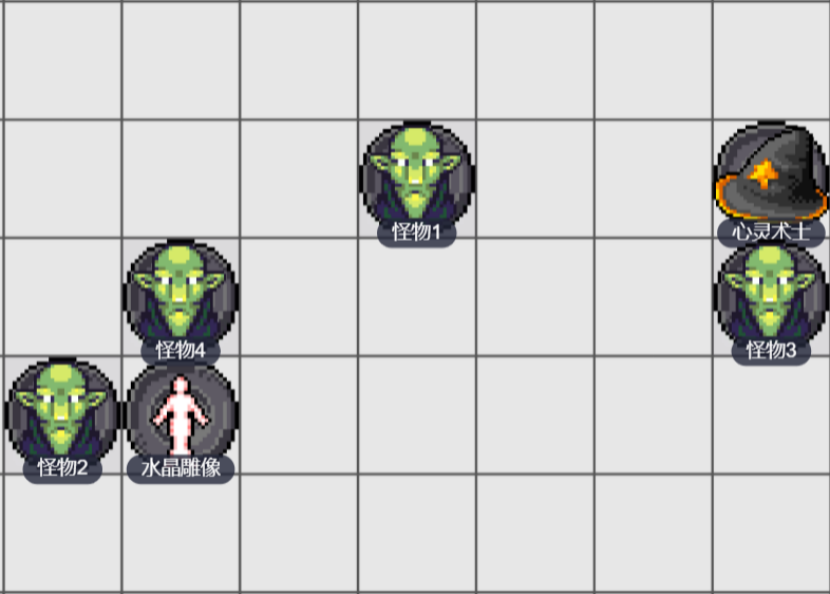

真知术True Seeing
四环 预言
施法时间：1动作
施法距离：触及
法术目标：一个生物
法术成分：V、S、M（由蘑菇粉、藏红花和油脂制成得眼药膏，价值为25gp，作为该法术的耗材）
持续时间：1小时
你触碰一个自愿的生物，让该法术赋予其看到事物真实面目的能力。受术者在法术持续时间内拥有 120 尺的真实视觉，其能发现被魔法隐藏的暗门，也能看到以太位面。
原初守护Primordial Ward
四环 防护
施法时间：1动作
施法距离：自身
法术目标：无
法术成分：V、S
持续时间：1小时
你在本法术的持续时间内具有对强酸，寒冷，火焰，电击和雷鸣伤害的抗力。
当你收到上述类型之一的伤害时，你可以使用你的反应来得到对该种类型伤害的免疫。若你如此做，则你在直到你的下个回合结束前具有对应的免疫，之后此法术终结。
秘法眼Arcane Eye
四环 预言
施法时间：1动作
施法距离：30尺
法术目标：空间内一点
法术成分：V、S、M（一点蝙蝠毛皮）
持续时间：1小时
你在施法距离内创造出一个漂浮在空中的隐形魔法眼。
秘法眼拥有30尺普通视觉和30尺黑暗视觉，你通过精神连接接收秘法眼传来的视觉信息。
你可以使用一个动作让秘法眼向任意方向移动30尺。秘法眼远离你的距离没有限制，但它无法进入另一个位面。固体障碍物会阻挡秘法眼的移动，但它可以穿过任何直径大于1尺的缝隙。
净化灵光Aura of Purity
四环 防护
施法时间：1动作
施法距离：自身（半径30尺）
法术目标：若干生物
法术成分：V
持续时间：专注，至多10分钟
净化的能量自你身上发出并形成 30 尺半径的灵光，在法术持续时间内，灵光将以你为中心随你移动。灵光范围内的所有友方生物获得以下好处：
·对毒素伤害、暗蚀伤害具有抗性。
·最大生命值不会被其它生物降低。
·免疫疾病。
·对抗健康类负面状态、心智类负面状态的豁免具有优势。
·如果生命值为0，则自己的回合开始时恢复1点生命值（构装生物、不死生物不享受这一条特性）。
放逐术Banishment
四环 防护
施法时间：1动作
施法距离：60尺
法术目标：一或多名你能看见的生物
法术成分：V、S、M（一件令目标厌恶的物品）
持续时间：专注，至多1分钟
你试图将一名你能看见的生物送往另一位面。目标必须进行一次智力豁免并成功通过，否则将被放逐。
如果目标是你所处位面的原住民，则他被放逐到一个无害的半位面。法术终止时，目标重新出现在被放逐前的空间。如果该空间被占据，则它将出现在最近的未被占据空间。
如果目标不是你所处位面的原住民，则他会伴随着轻微的“啪”一声被放逐回其家园位面。如果法术在1分钟过去之前终止，则目标将在他被放逐前的空间重新出现。如果该空间被占据，则他在最近的未被占据空间出现。如果法术在持续1分钟后终止，则目标不会回到原地。
升环施法效应：使用五环或更高法术位施展该法术时，你使用的法术位每比四环高一环，就能多指定一个目标。
//除了法术描述的离开半位面的方式以外，还有几种方法也可以离开半位面：
·对受术者使用成功的“解除法术”或类似效应，来解除放逐术。
·受术者通过“异界传送”或类似能力，来到其它位面。
·打断放逐术的法术专注。
枯萎术Blight
四环 死灵
施法时间：1动作
施法距离：30 尺
法术目标：一个生物，或一个植物类物件
法术成分：V、S
持续时间：立即
死灵魔法的能量袭向施法距离内一个你能看见的生物，或是一个植物类物件，并榨取他的水分和活力。目标必须进行一次体质豁免，豁免失败者将受到8d12点黯蚀伤害，豁免成功则伤害减半。该法术对构装生物和不死生物无效。
如果目标为植物类生物，则其豁免检定具有劣势，且法术伤害取最大值。
如果目标为植物类物件，如一棵树或灌木，则它无需进行豁免而直接枯萎死去。
升环施法效应：使用五环或更高法术位施展该法术时，你使用的法术位每比四环高一环，法术的伤害就增加1d12。
强迫术Compulsion
四环 附魔
施法时间：1动作
施法距离：30 尺
法术目标：若干生物
法术成分：V、S
持续时间：专注，至多1分钟
指定施法距离内你能看到，且能听到你声音的若干生物并迫使其分别进行一次感知豁免。豁免失败者将受到该法术效应的影响。直至该法术终止前，你可以在你每个回合中用一个附赠动作指向某个水平方向。随后，每个受术目标在其下一回合里必须使用其所有的移动力尽可能的向该方向移动。目标只有在无法继续移动时，才能执行其余行动。
每个目标不会被强令走向明显致命的危害物中，比如火堆或陷坑里，不过目标在向指定方向移动时同样可以引起借机攻击。
困惑术Confusion
四环 附魔
施法时间：1动作
施法距离：90 尺
法术目标：空间内一点
法术成分：V、S、M（三颗坚果壳）
持续时间：专注，至多1分钟
此法术冲击并扭曲生物的意志，并使其产生错觉并引发不受控的行动。在施法距离内指定一点，以该点为中心的10尺半径球状区域内的生物必须进行一次感知豁免并成功通过，否则将受到该法术的影响。
受术目标不能执行反应，并且陷入“困惑”状态。受术生物在其每回合结束时可以在进行一次感知豁免。如果该豁免成功，则该目标身上该法术的效应终止。
升环施法效应：使用五环或更高法术位施展该法术时，你使用的法术位每比四环高一环，球状区域半径就增加5尺。
召唤次级元素生物Conjure Minor Elementals
四环 咒法
施法时间：1动作
施法距离：90 尺
法术目标：空间内一点
法术成分：V，S
持续时间：专注，至多1小时
你召唤元素生物并使其显现在施法范围内一处你能看见但未被占据的空间。选择以下选项之一作为显现的生物：
·一个3级的元素
·两个2级的元素
·四个1级的元素
·六个1/2级或更低的元素
每个被该法术召唤的元素生物在生命值降至0或死亡，或者法术终止时消失不见。一次召唤次级元素生物所召唤的元素种类必须相同，你决定元素的种类，并将所有元素合并为一个军团生物，为你而战。
升环施法效应：使用更高法术位施展该法术时，你能召唤的元素的最大等级增加。六环时，每个元素的等级为四环时的两倍；八环时，每个元素的等级为四环时的三倍。
召唤林地之精Conjure Woodland Beings
四环 咒法
施法时间：1动作
施法距离：60尺
法术目标：空间内一点
法术成分：V、S、M（每个被召唤生物一枚冬青浆果）
持续时间：专注，至多1小时
你召唤精类生物并使其显现在施法范围内一处你能看见但未被占据的空间。选择以下选项之一作为显现的生物：
·一个3级的精类
·两个2级的精类
·四个1级的精类
·六个1/2级或更低的精类
每个被该法术召唤的精类生物在生命值降为0或死亡，或者法术终止时消失不见。一次召唤林地之精所召唤的精类生物种类必须相同，你决定精类的种类，并将所有精类合并为一个军团生物，为你而战。
升环施法效应：使用更高法术位施展该法术时，你能召唤的精类的最大等级增加。六环时，每个精类的等级为四环时的两倍；八环时，每个精类的等级为四环时的三倍。
//请注意：dnd5z重置了皮克精，将其挑战等级从1/4级提高为1级。也重置了快可灵，将其挑战等级从1级提高为2级。
操控水体Control Water
四环 变化
施法时间：1动作
施法距离：300尺
法术目标：一处水域
法术成分：V、S、M（一滴水和一撮土）
持续时间：10 分钟
你在法术终止前控制任一片独立的水体，控制范围为你指定的一处边长 100 尺的立方区域。施展该法术时，你可以从以下效应中选择其一生效。在你之后的每个自己回合中，你可以用一个动作重复生效同一效应，或是选择实现另一效应。
上涨。你使控制区域内水位上涨至多 20 尺。如果该区域包含有滨岸，则水体漫过涨水覆盖的干土。
如果你指定的区域是一片大水体中的一部分，则你改为制造一片 20 尺高的波浪，并从区域的一边扑向另一边再拍下水面。波浪中任何巨型或更小的载具都会被带到水浪行进的另一边。且所有巨型或更小的载具都有 25%的几率被倾覆。
直至法术终止或你选择另一个效应前，水位的上涨情况将保持不变。如果该效应用以产生波浪，则波浪在你下一回合开始时再次进行翻打。
分水。你使区域内的水体分开并形成一条水体的沟壑。沟壑从法术区域的一头延伸到另一头，而被分开的水体则在两边形成两道水墙。沟壑维持至法术终止或直至你选择另一个效应。该效应终止时，沟壑会在接下来的一轮里慢慢的恢复成通常的水位。
转向。你使区域内的水体向一个你自选的方向流动。使其绕过障碍，或沿着墙壁向上流，甚至流向一些不太可能的方向，区域内的水体都遵照你指使的方向流动，但一旦其流出法术区域，则恢复为其所在地形的流向。水体持续向你所选方向流动，直至法术终止或直至你选择另一效应。
漩涡。该效应需要水体至少为 50 尺的方形区域并且至少有 25 尺深。你在区域中央形成一个漩涡。其形态为底部宽 5 尺顶部宽 50 尺，且 25 尺高。水中任何在漩涡 25 尺范围内的生物或物件将被漩涡向自身拉动 10 尺。受影响的生物可以进行一次力量（运动）检定来对抗你的法术 DC，以通过游泳脱离漩涡控制。
任何生物在一个回合内第一次进入漩涡或者在漩涡内开始其回合时，必须进行一次力量豁免。豁免失败者将受到 2d8 点钝击伤害，并被拖入漩涡中心直至法术终止。豁免成功则伤害减半，且不会被拖入漩涡。被拖入漩涡中心的生物可以用其动作尝试游泳来离开漩涡（如上文所述），但它此时进行的力量（运动）检定具有劣势。
物件在一回合里第一次进入漩涡时受 2d8 点钝击伤害；如果物件保持在漩涡内，该伤害就会在每轮持续发生。
防死结界Death Ward
四环 防护
施法时间：1动作
施法距离：触及
法术目标：一个生物
法术成分：V、S
持续时间：8小时
你触碰一个生物，并给予其对死亡的防护。
目标的生命值因承受伤害而降至0时，改为生命值降至1，并终止本法术效应。
目标受到不造成伤害但直接致死效应影响时，改为该致死效应被取消，目标的生命值降至1，并终止本法术效应。
//力竭6层、体质降为0等情况，可能会在不造成伤害的情况下杀死一个生物。此时，防死结界会抵消那个造成力竭的效应、抵消那次体质属性损伤。
但是，对一个行将就木的老人使用防死结界，无法让他活下来。因为衰老导致的死亡是持续判定的，防死结界抵消了一次“老死”，下一瞬间这个老人还是会死。
任意门Dimension Door
四环 咒法
施法时间：1动作
施法距离：500尺
法术目标：空间内一点（传送目的地）、一个生物（共同传送）
法术成分：V
持续时间：立即
你将自己从当前位置传送至施法距离内的任意地点，并准确到达该目的地。法术的目的地可以是你能看见的、可想象的地点，也可以是通过距离和方向说明的地点，比如“径直向下 200 尺”，“西北向上 45 度 300 尺”。
进行传送时，你的随身物件不能超过你的负重。你还可以带上一个自愿的生物，且其体型不能比你大，而他的随身物件也不能超过其负重。该生物在你施法时必须在你5尺内。
如果你的目的地已经被生物或物件占据，则你以及任何与你一起传送的生物都将受到4d6点力场伤害，且法术传送失败。
升环施法效应：使用五环或更高环阶的法术位施展此法术时，你使用的法术位每比四环高一环，最大传送距离就增加250尺。
预言术Divination
四环 预言（仪式）
施法时间：1动作
施法距离：自身
法术目标：无
法术成分：V、S、M（适合你DM的零食，总共价值至少25元，作为该法术的耗材）
持续时间：立即
你的魔法和贡品让你得以与世界意志的化身取得联络。你可以就某个特定的目标、事件或活动提问一个与其7日内状况相关的问题。DM将给予你真实的答复，这个答复可能是一段短语、一节神秘的短诗或是一个预兆。
支配野兽Dominate Beast
四环 附魔
施法时间：1 动作
施法距离：60尺
法术目标：一只你能看见的野兽
法术成分：V、S
持续时间：1分钟
你试图安抚一头施法距离内你能看见的野兽，目标野兽必须成功通过一次感知豁免，否则将在法术持续时间内被你支配。
升环施法效应：使用五环法术位或更高环阶法术位施展该法术时，持续时间会相应延长。五环，10分钟；六环，1小时；七环，8小时，八环，24小时；九环，直到被解除。
艾伐黑触手Evard’s Black Tentacles
四环 咒法
施法时间：1动作
施法距离：90尺
法术目标：空间内一点
法术成分：V、S、M（巨章鱼或巨鱿鱼的一条触须）
持续时间：专注，至多1分钟
你指定一处施法距离内你能看见的20尺边长的立方体区域，虚空中钻出了无数蠕动的乌黑触须，进而使该区域成为困难地形。
任何生物在一个回合内第一次进入该区域，或者在区域内开始其回合时，必须进行一次力量豁免。豁免失败者将受到3d10点钝击伤害，并且被触须包裹至法术的持续时间结束。已被触手包裹的生物在区域内开始自己的回合时，自动受到3d10点钝击伤害，而它着装或携带的物件也会受到3d10点强酸伤害。
被触手包裹的生物处于“束缚”和“目盲”状态，且无法呼吸。该生物可以用一个动作进行一次力量检定或敏捷检定（由它选择），对抗法术豁免DC，检定成功则结束包裹。每个方格的触手具有13AC、50HP，可以破坏触手来解救一名被触手包裹的生物。不过到了某个生物的回合开始时，虚空中又会钻出新的触手。
如果被触手包裹的生物传送离开了法术区域，那么触手会视为它正在携带的物件与它一同传送，继续包裹目标。脱离了法术区域的触手，会在一轮后消失。举例来说，被触手包裹的米莉雅在先攻值12时执行自己的回合，用一个动作传送离开法术区域，那么到了下一轮的先攻值12，米雅莉的回合开始时，触手消失。
鬼斧神工Fabricate
四环 变化
施法时间：10分钟
施法距离：120尺
法术目标：若干物件
法术成分：V、S
持续时间：立即
你将一种原材料转化成该材料制作的成品。例如，你可以将一丛树木转化为一座木桥，一把麻草化为绳子，或是将亚麻和羊毛化作衣物。
指定施法距离内你能看见的原材料。只要有足够的材料，你就可以将他们转化为一件大型或更小的物件（至多占据10尺立方区域或八个相邻的5尺立方区域）。如果你的目标材料是金属、石料或者其他矿石材料，那么被制造的物件不能大于中型（至多占据5尺立方区域），制成品的质量和原材料质量相同。
生物或魔法物品不能作为该法术的原料或成品。你需要通过相应的技能检定，才可以造出需要高工艺水平制作的物品，如珠宝、武器、玻璃、护甲等。
温度护盾Temperature Shield
四环 塑能
施法时间：1 动作
施法距离：自身
法术目标：无
法术成分：V、S、M（一小块磷或者一只萤火虫）
持续时间：1小时
温度屏障在法术持续时间内环绕你的身体，散发出10尺半径的明亮光照，以及该范围外10尺的微光光照。你可以提前以一个动作解散该效应并终止该法术。
你选择控制温度，生成一副高温护盾或低温护盾。高温护盾将为你提供冷冻伤害抗性，低温护盾则提供火焰伤害抗性。任何生物对你发动近战攻击时（无论是否命中），护盾将对其迸出烈焰或冰霜，高温护盾将对攻击者造成2d8点火焰伤害，而低温护盾则对其造成2d8点冷冻伤害。
行动自如Freedom of Movement
四环 防护
施法时间：1动作
施法距离：触及
法术目标：一个自愿生物
法术成分：V、S、M（一条绑在手臂或其他肢体上的皮带）
持续时间：1分钟
你触碰一个自愿生物，使目标移动时不受困难地形限制，并且免疫移动类负面状态。
升环施法效应：以更高环法术位施展此法术时，法术的持续时间会延长。五环时为10分钟，六环时为1小时，七环时为8小时，八环或九环时为24小时。
擒抱藤Grasping Vine
四环 咒法
施法时间：1附赠动作
施法距离：30尺
法术目标：地面上一点
法术成分：V、S
持续时间：1分钟
你指定施法距离内一个你能够看见的未被占据的地面方格，召唤一条破土而出的藤蔓。藤蔓是一个中型物件，AC13、HP50、免疫心灵伤害，对毒素和火焰伤害具有易伤。
施展该法术时，你可以指使该藤蔓抽拉其300尺范围内一个你能看见的生物。该生物必须进行一次力量检定，对抗你的法术豁免DC，检定失败则被往藤蔓所在方向拉近最多200尺。
直至该法术终止前，你可以在你的回合里用一个附赠动作操纵藤蔓抽拉。
高等隐形术Greater Invisibility
四环 幻术
施法时间：1动作
施法距离：触及
法术目标：一个生物
法术成分：V、S
持续时间：专注，至多1分钟
一个你触碰的生物变为隐形，直至法术终止。任何保持在目标身上的着装物和携带物也可以维持隐形状态。
信仰守卫Guardian of Faith
四环 咒法
施法时间：1动作
施法距离：30尺
法术目标：空间内一点
法术成分：V
持续时间：8小时
一个大型的幽灵守护者出现在施法距离内一个你能看见且由你指定的未被占据空间，并在法术持续时间内在该处悬浮。占据该空间的守护者除了一把闪光的剑和饰有你守护神标志的盾牌外，其他部位都只是一片模糊。
任何与你敌对的生物，在守护者身边10尺内开始其回合，或是在某一回合内首次进入守护者身边10尺范围内，必须进行一次敏捷豁免。豁免失败者将受到20点光耀伤害，豁免成功则伤害减半。
幻景Hallucinatory Terrain
四环 幻术
施法时间：10 分钟
施法距离：300尺
法术目标：空间内一点
法术成分：V、S、M（一块石头、一枝嫩枝和一小片绿色植物）
持续时间：24 小时
你使施法距离内一处150尺立方区域内的自然地形在视觉、听觉、嗅觉上都像是另一种自然地形。因此，开阔的平原或者一条路可能会变得像是一片沼泽，或是丘陵、裂谷以及其他困难地形，甚至是无法通过的地形。一个池塘可能变得看起来像一片草地，一个悬崖像是一个缓坡，或者使一条乱石沟像是一条宽阔平坦的道路。区域内经过加工的建筑、设备或生物的外表不会改变。
地形的触觉特征不会改变，所以进入这片区域的生物可能会看穿幻象。如果触觉区别不明显，一个认真调查幻象的生物可以尝试进行一次对抗法术豁免 DC 的智力（调查）检定以揭穿幻象。对于一个识破了幻象本体的生物，幻象看起来就像是一层模糊的图像叠加在真实地形上。
冰风暴Ice Storm
四环 塑能
施法时间：1动作
施法距离：300 尺
法术目标：地面上一点
法术成分：V、S、M（一撮尘土和几滴水）
持续时间：立即
以施法距离内地面一点为中心的一处半径20尺，高40尺的柱状区域内，岩石般坚硬的冰雹重重地砸向地面。每个处在范围内的生物都必须进行一次敏捷豁免，豁免失败者将受到4d8点钝击伤害和4d6点冷冻伤害，豁免成功则伤害减半。
冰雹使风暴影响的区域变为困难地形，直至你的下一回合结束。
升环施法效应：使用五环或更高法术位施展该法术时，你使用的法术位每比四环高一环，冷冻伤害增加1d6，钝击伤害增加1d8。
魔邓肯忠犬Mordenkainen’s Faithful Hound
四环 咒法
施法时间：1动作
施法距离：30尺
法术目标：空间内一点
法术成分：V、S、M（一只微型银质哨子、一块骨头和一根线）
持续时间：8小时
指定施法距离内一处你能看见且未被占据的空间，你在该处创造出一只隐形的守护犬。守护犬会在法术持续时间内留在原地，直到你使用一个动作将其解散，或者直到你移动到距它100尺外。
守护犬具有30尺真实视觉。当它看见一个生物时，除非该生物是你在施法时设定的友方生物，它会大声吠叫，足以让300尺内听见。
在你的每回合开始时，守护犬会尝试啮咬其5尺范围内一个与你敌对的生物。这是一次由你发动的近战法术攻击。若命中，造成4d8点穿刺伤害，并使目标的移动速度降为0，直到它的下个回合结束。
魔邓肯私人密室Mordenkainen’s Private Sanctum
四环 防护
施法时间：10分钟
施法距离：120尺
法术目标：空间内一点
法术成分：V、S、M（一片薄铅片、一块不透明的玻璃、一小块棉花或布料和贵橄榄石粉末）
持续时间：24小时
你对施法距离内一片区域施以魔法防护。该区域为一立方区域，其边长至小 5 尺，大至 100 尺。该法术一直持续至持续时间结束或施法者以一个动作主动解除。
施展该法术时，其生效的保护内容由你决定。在以下几项属性中作选择，你可以选择若干项或者全部选择：
声音不能穿透被保护区域边缘的障壁。
被保护区域的障壁变得黑暗而模糊，无法通过视觉（包括黑暗视觉）看穿。
预言法术创造的传感器无法出现在被保护区域内，也无法穿过区域边界处的障壁。
区域内的生物不能成为预言法术的目标。
任何事物无法通过传送进出被保护区域。
在被保护区域内，位面旅行被封锁。
每日在同一个位置施展此法术，持续一年，会使这些效果成为永久性效果。
升环施法效应：使用五环或更高法术位施展此法术时，你使用的法术位每比四环高一环，你就可以将被保护的立方区域边长增加 100 尺。比如使用五环法术位时，你就能保护边长至多200尺的立方区域。
欧提路克弹力法球Otiluke’s Resilient Sphere
四环 防护
施法时间：1动作
施法距离：30 尺
法术目标：一个特定生物或物件
法术成分：V、S、M（一块透明的半球形水晶和一块与之形状相配的半球形阿拉伯胶）
持续时间：专注，至多1分钟
一个微微发光的力场球，尝试将施法距离内一个体型最多比你大一级的生物或物件封在其中。目标进行一次敏捷豁免，豁免失败则目标在法术持续时间内被关封在球体中。
该球体是一个透明的力场造物，隔绝了内部与外部的效果线。没有任何事物可以通过物理方式穿过力场球。它免疫所有伤害，但法术“解离术Disintegrate”可以使它立即摧毁。
该球体没有重量，而其尺寸刚好可以容纳球内的生物或物件。被封住的生物可以使用其动作推动球壁并以该生物速度的一半滚动球体。另外，球体也可以被其他生物拿起或移动。
变形术Polymorph
四环 变化
施法时间：1动作
施法距离：60尺
法术目标：一个你能看见的生物
法术成分：V、S、M（一个毛虫虫茧）
持续时间：专注，至多1小时
选择一个施法距离内你能看见的、生命值不为0的生物。目标进行一次感知豁免，豁免失败则在法术的持续时间内受到变形。
目标的新形态由你选择，必须满足以下所有条件：
·新形态的生物类型是野兽，或者与目标原本的生物类型相同。
·新形态是一般个体，而不是某个特定生物。
·新形态的等级，小于或等于目标原本的等级。
·新形态的等级，小于或等于“你施展此法术所使用的法术位环阶×2”。
当目标在新形态下的生命值变为0或死亡时，它变回正常形态。当它变回正常形态时，则立即恢复变化前的生命值。如果目标因为生命值降至0而变回正常形态，则其正常形态需要承受所有的溢出伤害。只要溢出的伤害没有将该生物正常形态的生命值降为0，它就不会因打击而陷入昏迷。
该生物可作出的动作因其新形态而有所限制。一般而言，它不能说话，不能施法，也不能作出其他需要用手和需要说话的动作。作为特例，鹦鹉可能会说话，猿猴可能有灵活的手。
目标的装备融入新形态中，但其不能启动，使用，挥舞或以其他方式从其装备上获得增益。
变形术会让生物的数据发生怎样的改变，详见下表。
变形术数据
能力 | 旧形态的数据 | 新形态的数据 | 两种数据 |
体型 | √ | ||
生物类型 | √ | ||
种族 | √ | ||
力量、敏捷、体质 | √ | ||
感知、智力 | √ | ||
熟练项和熟练加值 | √ | ||
生命值和生命骰 | 当前生命值采用新形态，而旧形态的当前生命值隐藏 | 最大生命值采用两种数据的较低者 | |
专长 | √ | ||
职业特性 | 都不生效 | ||
移动方式和速度 | √ | ||
天生武器 | √ | ||
感官 | √ | ||
天生施法 | √ | ||
动作、附赠动作、反应选项 | √ | ||
其它非传奇特性 | √ | ||
传奇特性、巢穴特性 | 都不生效 |
惊惧斩Staggering Smite
四环 塑能
施法时间：1 附赠动作
施法距离：自身
法术目标：无
法术成分：V
持续时间：1 分钟
你在法术持续时间内下一次用近战武器攻击命中某个生物时你的武器将同时贯穿对方的身体与心智。该攻击对目标造成额外4d6点心灵伤害。该目标必须进行一次感知豁免，豁免失败则陷入恍惚，直到它的下一回合结束。
塑石术Stone Shape
四环 变化（仪式）
施法时间：1 动作
施法距离：触及
法术目标：一块岩石
法术成分：V、S、M（软粘土，必须捏成你想塑造的大致形状）
持续时间：立即
你触碰一个体积为中型或更小的石质物件或某块岩石长宽高都不超过 5 尺的一部分，并将其塑造成你想要的任意形状。比如你可以将一块大石头变成一件武器、一尊塑像、一具棺材，也可以在石墙上开出一条小通道，前提是墙的厚度不能超过5尺。你也可以使一扇石门或石质门框变形来将门封死。你创造的物件最多可以有两条铰链和一道闩，除此之外不能以该法术能塑造出更复杂的机械结构。
石肤术Stoneskin
四环 防护
施法时间：1动作
施法距离：触及
法术目标：一个自愿生物
法术成分：V、S、M（价值100gp的钻石粉尘，作为该法术的耗材）
持续时间：1小时
该法术使你触碰的一个自愿生物皮肤变得硬如岩石。目标在法术终止前对钝击、穿刺和挥砍伤害具有抗性，只有在攻击检定上至少具有额外+1加值的魔法武器造成的钝击、挥砍、穿刺伤害可以忽略该抗性。
升环施法效应：以六环或更高环阶的法术位施展该法术时，只有至少具有+2攻击加值的魔法武器才能忽略此抗性；以八环或更高环阶的法术位施展该法术时，只有至少具有+3攻击加值的魔法武器才能忽略此抗性。
火墙术Wall of Fire
四环 塑能
施法时间：1动作
施法距离：120尺
法术目标：地面上一点
法术成分：V、S、M（一小块磷）
持续时间：专注，至多1分钟
你在施法距离内一块实体地面上创造出一面不透明的火墙。你可以选择创造长不过 60 尺、高不过 20 尺、厚不过5尺的直线型火墙；或是直径不过 20 尺、高不过 20 尺、厚不过5尺的环形火墙。
在火墙内开始其回合、或是在某个回合内首次进入火墙的生物，必须进行敏捷豁免，豁免失败则受到5d8点火焰伤害，豁免成功则伤害减半。你的每个回合结束时，位于火墙区域内的未被着装或携带的物件会受到等量伤害，且可燃物会被点燃。
升环施法效应：使用五环或更高法术位施展该法术时，你使用的法术位每比四环高一环，法术的伤害就增加 1d8。
魅惑怪物Charm Monster
四环 附魔
施法时间：1动作
施法距离：30尺
法术目标：一或多名你能看见的生物
法术成分：V、S
持续时间：1小时
你尝试魅惑法术距离内你可见的某一生物。它立即进行感知豁免，如果你或者你的同伴正在与它战斗，它在这次豁免上具有优势。豁免失败则被你魅惑。
升环施法效应：当你使用五环或更高的法术位施放该法术时，使用的法术位每高一环，你就可以多指定一个额外生物作为目标。每个被你指定的生物相互之间的距离必须在30尺内。
元素灾祸Elemental Bane
四环 变化
施法时间：1动作
施法距离：90尺
法术目标：一或多名你能看见的生物
法术成分：V、S
持续时间：1分钟
选择距离之内，你能看见的一个生物，并选择下述伤害类型之一：强酸，寒冷，火焰，闪电或雷鸣。目标必须通过一次体质豁免，否则便在此法术的持续时间内受其影响。每个回合中，目标第一次受到选定类型的伤害时，额外受到6d6点对应类型的伤害。此外，直到法术终结，该目标失去对该伤害的抗性。
升环施法效应：当你使用五环或更高的法术位施放该法术时，使用的法术位每高一环，你便可以额外指定一个生物作为目标。当选定生物时，每个生物间的距离不得超过30尺。
获得高等坐骑Find Greater Steed
四环 咒法
施法时间：10分钟
施法距离：30尺
法术目标：空间内一点
法术成分：V、S
持续时间：24小时
你召唤一个圣魂并呈现出忠诚的、雄伟的坐骑外观。坐骑出现在施法范围内未被占据的空间内，坐骑的外形由你从以下形态中选择：四足亚龙、狮鹫、飞马、鹿鹰兽、恐狼、犀牛或者剑齿虎。坐骑拥有你选择的形态数据，如同怪物资料，但它实际上是天界、精类或邪魔（由你选择）而不是通常类型。另外，如果你的坐骑智力为5或以下，它的智力变为6，同时能听懂一种你所说的语言。
你在战斗中控制坐骑。当坐骑在你周围1里内，你可以通过心灵感应和它沟通。当骑乘在你的魔法坐骑上时，所有你施展的只以你为目标的法术同时也影响你的魔法坐骑。
当魔法坐骑的 HP 降为 0 时，它会暂时消失。你也可以以一个动作解散你的魔法坐骑使得它消失。再次施放这个法术可以重新召唤绑定的坐骑，此时它的生命值全部恢复，并且任何状态都被移除。
你不能通过这个法术或获得坐骑法术同时拥有与1个以上的魔法坐骑的联系，以一个动作，你可以在任何时候将你的坐骑从你们的联系中解放，使得它消失。
每当坐骑消失，它会留下所有它穿戴或者携带的物品。
自然守卫Guardian of Nature
四环 变化
施法时间：1附赠动作
施法距离：自身
法术目标：无
法术成分：V
持续时间：专注，至多1分钟
自然之魂回应你的呼唤并将你转变为一个强大的守卫。转变持续到法术结束。你选择以下形态之一取得：原始猛兽或战争巨树。
原始猛兽
如野兽般的皮毛覆盖你的身体，你的面部特征变得野性，并且你得到以下增益：
·你的步行速度增加10尺。
·你得到120尺的黑暗视觉。
·你基于力量的攻击检定得到优势。
·你的近战武器攻击在击中时会造成额外1d8点力场伤害。
战争巨树
你的皮肤出现树纹，枝叶从你的头发上萌芽，并且你得到以下增益：
·你得到20点临时生命。
·你的体质豁免检定得到优势。
·你基于敏捷或基于感知的攻击检定得到优势。
·当你在地面上时，你周围 15 尺的地面对于你的敌人而言是困难地形。
莫伊之影Shadow of Moil
四环 死灵
施法时间：1动作
施法距离：自身
法术目标：无
法术成分：V、S、M（镶嵌在宝石里的不死生物的眼睛，价值至少 150GP）
持续时间：专注，至多1分钟
如同火焰般的暗影完全笼罩住你的身体，使你对于其他人处于重度遮蔽，直到法术结束。
暗影还会将你周围 10 尺内的微光照明转变为黑暗，或者把同样区域的明亮照明转变为微光。直到法术结束之前，你得到对光耀伤害的抗性。此外，不论何时在你周围10尺内的生物用攻击命中你时，暗影会猛击那个生物，对他造成2d8 点暗蚀伤害。
致病辐射Sickening Radiance
四环 塑能
施法时间：1 动作
施法距离：120 尺
法术目标：空间内一点
法术成分：V、S
持续时间：专注，至多10分钟
淡绿色的光线以你选择的距离内一点为中心扩散成半径30尺的球体。光线会绕过拐角扩散，并一直持续到法术结束。你可以用一个附赠动作，将球体移动最多30尺，但不能超出施法距离。
当一个生物在回合内第一次进入法术区域，或者是在其中开始回合，生物必须成功通过一次体质豁免检定，否则将承受4d10点光耀伤害和一级力竭，并且会发散出5尺半径的暗绿色光线。这个光线让生物无法从隐形中获益。光线在法术结束时消失，力竭不会在结束时消失。
召唤高等邪魔Summon Greater Fiend
四环 咒法
施法时间：1动作
施法距离：60尺
法术目标：空间内一点
法术成分：V、S、M（来自一个于 24小时之内被杀的类人生物身上的一剂血液）
持续时间：专注，至多1小时
你吐出污秽的词语，召唤邪魔为你而战。如果你是混乱阵营，你从无底深渊的无尽混沌中召唤来恶魔；如果你是守序阵营，你从九层炼狱的硫磺荒原中召唤来魔鬼。如果你的阵营为中立，则在首次施展该法术时，决定你今后能够召唤出恶魔还是魔鬼。
选择4级或更低的一种邪魔类型，例如影魔或者是魔裔盾卫。邪魔出现在法术距离内你可见的一处未被占据的空间，当它的生命值降低至0点或死亡，或是法术结束时，邪魔将会消失。
升环施法效应：当你使用五环或更高的法术位施放该法术时，使用的法术位每高一环，允许召唤的邪魔等级就+1。
浓酸球Vitriolic Sphere
四环 塑能
施法时间：1动作
施法距离：150尺
法术目标：空间内一点
法术成分：V、S、M（一滴巨型蜗牛的胆汁）
持续时间：立即
你指定距离之内的一点，一颗发光的1尺直径的强酸球飞向那里爆炸，酸液飞溅到20尺半径内的球形区域。在该区域中的每个生物必须进行一次敏捷豁免检定。若豁免失败，其受到10d4点强酸伤害，并在其下个回合结束时再受到初始伤害一半的强酸伤害。若豁免成功，该生物只受到一半伤害，且不会在其下个回合结束时受到伤害。
升环施法效应：当你使用五环或更高的法术位施放该法术时，使用的法术位每高一环，初始伤害便增加2d4。
碧水球Watery Sphere
四环 咒法
施法时间：1动作
施法距离：90尺
法术目标：空间内你能看见的一点
法术成分：V、S、M（一滴水）
持续时间：专注，至多1分钟
你在距离之内，你能看见的一点上召唤出一个半径等同于你的体型长度的水球。水球可以悬浮于空气中。水球将在法术的持续时间内持续存在。
处于水球空间内的任何生物必须进行一次力量豁免检定。若豁免成功，该生物将被排出到水球周围最近的未被占据的空间中。体型比你大至少两级的生物将自动于此豁免检定中成功。若豁免失败，生物会被水球淹没，处于束缚和窒息状态。关于水域对战斗的更多影响，详见“战斗-水下战斗”。
被水球淹没的生物可以用一个动作进行力量检定，对抗你的法术豁免DC，豁免成功则它可以离开水球，以倒地状态出现在水球附近5尺内一处未被占据的空间。若水球淹没的生物超过其体积，一个已经被束缚的随机生物将被排除，以倒地状态出现在水球附近5尺内一处未被占据的空间。
以一个附赠动作，你可以在直线方向上移动水球，至多移动30尺。水球淹没的所有生物也会随之移动。你可以用水球撞击生物来迫使其进行豁免检定。
当此法术终结时，水球会掉落在地，熄灭其周围30尺内的所有普通火焰。任何被水球束缚的生物会在摔落点成为倒地状态。随后水流会消失。
劳洛希姆心灵长枪Raulothim's Psychic Lance
四环 附魔
施法时间：1动作
施法距离：120尺
法术目标：一个生物
法术成分：V
持续时间：一轮
从额头处释放一道闪闪发光的灵能长矛，选择施法距离内一个你能看见的生物作为法术的目标。或者，你可以在施法时说出一个生物的真名，如果被唤名的生物身处施法距离内，即使你无法看见它，它也会成为法术的目标。
目标必须成功通过一次智力豁免，否则将受到7d6点心灵伤害，并陷入失能，持续至你的下回合开始。如果豁免成功，它只承受一半伤害并且不会失能。
此法术造成的失能，属于一种心智类负面状态，因此可以被“心之宁静”解除。免疫心灵伤害的生物，也免疫此法术造成的失能。
升环效果：当你用五环或更高的法术位施展此法术时，你使用的法术位每比四环高一环，法术的伤害增加3d6。
引力裂沟Gravity Sinkhole
四环 塑能
施法时间：1动作
施法距离：120尺
法术目标：空间内你能看见的一点
法术成分：V、S、M（一块黑色的大理石）
持续时间：立即
一道半径20尺球形范围的破坏性能量在施法距离内你能看见的一点为源点形成，并开始拖拽范围内的生物。所有在范围内的生物必须进行一次体质豁免检定。若豁免失败，该生物受到6d10点力场伤害并且会被直直拉向能量的中心，并在离中心尽可能近的未被占据的空间停止（哪怕这会让他飞到天上）。若豁免成功，则其受到一半伤害并且不会被拉走。
升环施法效应：当你使用五环或者更高环位的法术位施展该法术时，每比四环高出一环的法术位可以使该法术的伤害增加1d10。
兵装融合Military Fusion
四环 变化
施法时间：1动作
施法距离：自身
法术目标：若干魔法物品
法术成分：V、S
持续时间：专注，至多1小时
你将若干件与你同调的魔法物品分离出来，组装为一个机关金刚，它出现在你身旁5尺内未被占据的一处空间。机关金刚的数据由组成它的魔法物品的数量决定。当其生命值降至0或法术结束时，组成它的魔法物品散乱地掉落在附近的地面上。
机关金刚可以正常使用组成它的魔法物品，或从中获得增益，忽略该物品的使用条件。其它生物无法使用这些魔法物品，也无法从中获得增益。
该生物在法术的持续时间内对你和你的同伴们友好。在战斗中，该生物使用你的先攻，但在你的回合结束后立即行动。它遵从于你的口头指令（无需任何动作）。如果你不发令，它将执行回避动作并远离任何危险。
机关金刚Artificial King Kong
中型构装体，无阵营
护甲等级：16（天生护甲）
生命值：40+20×魔法物品数量
速度：40尺
力量18（+4） 敏捷16（+3） 体质20（+5）智力15（+2） 感知13（+1） 伤害免疫：毒素、心灵
状态免疫：中毒、力竭、石化
感官：黑暗视觉60尺，被动察觉11
语言：创造者的所有语言
熟练加值：3+魔法物品数量
挑战等级：无
熟练者。机关金刚熟练于任何组成它的魔法物品，包括武器、盾牌、护甲等。
奥能武器。机关金刚的武器攻击额外造成魔法物品数量×d4的力场伤害。
猛力攻击。机关金刚使用它具有熟练的武器发动攻击检定之前，可以选择让本次攻击检定承受-5减值。若本次攻击命中，则其伤害掷骰获得+10加值。
动作
多重攻击。机关金刚发动两次猛击。如果某件魔法武器组成了它的一部分，它可以将任意次猛击替换为由该武器发动的攻击。
猛击。近战武器攻击：命中+熟练加值+力量调整值，触碰5尺，单一目标。若命中：1d10+力量调整值的钝击伤害。
附赠动作
启动魔法物品。机关金刚使用一件原本需要一动作启动的魔法物品。
//机关金刚数据中的“魔法物品数量”，意思是组成它的、需要同调的魔法物品，所占据的同调位数量。例如，巫师套装包含四件魔法物品，但只占据一个同调位，所以也只让机关金刚的“魔法物品数量”+1。
剑油Blade Oil
四环 变化
施法时间：10分钟
施法距离：触及
法术目标：特定物件
法术成分：S，M（一剂至少价值30gp的油膏，在施法时消耗）
持续时间：8小时
你针对特定生物熬制损伤式毒药，将膏药涂抹在手中的一把近战武器，或是20发弹药上。使其在法术的持续时间内，对由你选择的一种生物类型的生物，命中后可以额外造成2d6伤害，伤害类型与武器伤害相同。当你不再着装或携带这些武器或弹药，此法术会提前结束。
升环施法效应：使用五环或更高环阶的法术位施展该法术时，伤害变为3d6。
灵魂沙Soul Sand
四环 死灵（仪式）
施法时间：1小时
施法距离：30尺
法术目标：一块土壤
法术成分：V
持续时间：立即
你使用堕影冥界的黑暗侵染施法距离内的一块5尺立方的土壤，将其转化为一块5尺立方的灵魂沙。你最多同时转化出的灵魂沙数量，等于你的生命骰数量的一半。且每转化出一块灵魂沙，你完成长休时可以恢复的生命骰数量便减少一枚。这种损害会在灵魂沙被摧毁时复原。
灵魂沙是AC15、HP40、对毒素和心灵伤害具有免疫的中型物件。灵魂沙的表面是困难地形。生物在灵魂沙上起跳时的最大高度和最远距离减半。一个“骷髅”可以与一块灵魂沙同调，如同与魔法物品同调。同调了灵魂沙的“骷髅”的所有属性增加4点。
神能Divine Power
四环 塑能
施法时间：1附赠动作
施法距离：自身
法术目标：无
法术成分：V、S、M（一个装有金属碎片的圣物匣）
持续时间：专注，至多1分钟
呼唤你所信仰神祇的威力，为自己注入一股战斗力量和技能。直到此法术结束前，你获得以下好处：
·当你在自己的回合内采取攻击动作时，你可以使用人造武器发动两次武器攻击。
·你的力量值提升到与你的施法关键属性值相同。如果你的力量值高于你的施法关键属性值，你无视这项增益。
升环施法效应：使用六环或更高环阶法术位施展该法术时，如果你的等级至少为11级，你可以发动三次武器攻击；使用九环法术位施展该法术时，如果你的等级至少为17级，你可以发动四次武器攻击。
降灵糖Candies of Whitsunday
四环 附魔
施法时间：1动作
施法距离：15尺
法术目标：若干个自愿生物
法术成分：V，S，M（等同于受影响生物数量的糖块，每块至少价值1sp，在施法时消耗）
持续时间：专注，至多10分钟
以糖块作为媒介，让逝去勇者的意志附身于施法范围内若干个自愿生物。当你施展此法术时，从以下几种糖块中选择一种。在法术的持续时间内，目标获得相应的好处：
·哼将糖。目标造成的武器攻击伤害，每次增加2点。
·哈将糖。目标受到的武器攻击伤害，每次减少3点。
·钢躯糖。目标免疫擒抱和倒地。
·月隐糖。目标进入隐形状态，持续至其做出威胁性举动。
·夜叉戮糖。目标的重击范围+2，目标的当前生命值无法超过最大生命值的一半。
特别地，7级或更高等级的武僧只要携带了足量的糖块，便会视为习得了该法术，可以用一个动作消耗4点气来施展它。
焊接Weld
四环 防护
施法时间：1动作
施法距离：30尺
法术目标：一个自愿的构装生物
法术成分：S，M（一套电子束焊接工具）
持续时间：立即（维修），或1小时（装配）
散落的零件反重力地漂浮起来，由电子束激发的高温将它们与施法距离内一个自愿的构装体焊接为一个整体。当你施展此法术时，从维修和装配中选择一种，产生不同的魔法效应。
·维修。损坏的部件被重新拼装，目标恢复20d8点生命值，此法术还会终止目标的目盲、耳聋和石化状态。
·装配。你所着装或携带的人造武器、盾牌、盔甲，在法术的持续时间内与目标结合。目标自动着装这些装备，并视为具有它们的熟练项。如果这些装备是需要同调的魔法物品，目标还会立即与它完成同调。如果目标具有多重攻击能力，则它可以将多重攻击动作中的天生武器攻击，替换为使用装配的人造武器进行攻击。
生命显现Manifest Life
四环 死灵
施法时间：1反应
施法距离：自身
法术目标：无
法术成分：V，S
持续时间：1分钟
当你受到伤害时，你可以发动生命显现。流失的生命力转化为了一个实体的翠绿光球，环绕在你的身旁，它储存了等同于触发该反应的伤害数值的生命能量。直到你的下个回合开始之前，你每次受到伤害后，光球还会再储存等同于伤害数值的生命能量。
在法术的持续时间内，你可以用以下几种方式使用一个光球内的生命能量：
·当你以一次武器攻击命中一个邪魔或不死生物时，你可以消耗至多50点生命能量，对目标额外造成等量的光耀伤害。
·以一个附赠动作指定距离你60尺内的一个生物，你消耗若干点生命能量，使目标恢复等同于该数值的生命值。对邪魔或不死生物无效。
·当你在一次属性检定或豁免检定中失败时，你可以消耗至多50点生命能量，每消耗5点便会让该次检定获得+1加值，这可能使检定改为成功。
如果你是恶武士，你使用生命能量时，将法术描述中的“邪魔或不死生物”修改为“天界生物”。
重雾术Solid Cloud
四环 咒法
施法时间：1动作
施法距离：120 尺
法术目标：空间内一点
法术成分：V、S、M（一撮干燥的豌豆粉末）
持续时间：专注，至多10分钟
你以施法距离内一点为中心创造一片半径 20 尺的球状浓雾。浓雾会绕过拐角扩散，在球形内充斥所有角落，并造成重度遮蔽。浓雾持续至法术持续时间结束，但仍可被和风或更强风势（至少每小时10里）所吹散。
生物在浓雾范围内开始自己的回合，或是在某个回合内首次进入浓雾范围，速度降低到5尺，其当前回合的剩余移动力也降低到5尺。掉进浓雾范围的生物或物件也会减速，每轮安全坠落10尺。
升环施法效应：使用五环或更高法术位施展该法术时，你使用的法术位每比四环高一环，浓雾的半径就增加20尺。
传送预知Anticipate Teleportation
四环 预言
施法时间：10分钟
施法距离：触及
法术目标：一个自愿生物
法术成分：V、S、M（一只小巧的沙漏，用价值500gp的白金与水晶制成）
持续时间：8小时
你接触的目标获得了对传送的感知，周围散发出半径30尺的灵光。当有生物主动传送进入灵光范围，或被他的盟友传送进入灵光范围时，传送者消失在空间乱流中，直到传送的下一轮才会重新出现。这名传送者不会意识到自己的传送被延迟了。非自愿的传送，不会触发传送预知。
由于目标始终处于自身周围的灵光中，所以目标自己主动传送，或者被盟友传送时，也会延迟一轮。
升环施法效应：使用四环或更高环阶的法术位施展该法术时，你使用的法术位每比三环高一环，灵光的半径便增加20尺。
烹煮术Parboil
四环 塑能
施法时间：1动作
施法距离：30尺
法术目标：若干生物
法术成分：V、S、M（水和少量的硫）
持续时间：立即
选择施法距离内一点，你瞬间加热该点附近半径20尺区域内的空气，令被困其中的生物血液沸腾、大脑烤熟。生物需要进行一次体质豁免，豁免失败则受到6d6点火焰伤害并承受2d4点智力属性损伤，豁免成功则伤害减半且不承受智力属性损伤。
不死尉官Undead Lieutenant
四环 死灵
施法时间：1分钟
施法距离：30尺
法术目标：一个自愿的不死生物
法术成分：V、S
持续时间：直到被解除
你向那个污秽的生物施展法术，片刻之后，你的面容出现在它腐坏的身体前端。
选择施法距离内一个自愿的不死生物，你扬升它为你的“不死尉官”，授予它权力和魔力。具有以下效果：
·如果该生物原本的智力不足6，则提升至6点，并且学会一门语言。
·如果该生物原本需要每天消耗你的法术位来维持存在或控制，那么此时它不再需要消耗法术位。
·你可以将你控制下的一部分不死生物的指挥权交给它，那些不死生物也会听从不死尉官的命令。
·你可以将不死尉官作为法术的源点，施展法术。
·如果你与不死尉官的距离不超过1里，则你可以与它通过心灵感应沟通。
你只能同时拥有一个不死尉官。再次施展该法术会使前一个不死尉官的效果终止。
化岩术Transmute Rock
四环 变化
施法时间：1动作
施法距离：100尺
法术目标：一种特定物件
法术成分：V、S、M（分层装了多种不同地质年代的土石的玻璃瓶）
持续时间：直到被解除
选择施法距离内的一种非魔法的地形，你让其中最多10个5尺方格的物质形态转变，所有方格必须相连。如果你转变了某个生物所在的地形，那么该生物可以进行一次敏捷豁免，豁免成功则它可以移动至最近的一个未被转化的安全方格。
化岩术不是造成伤害的法术。法术描述中所说明的伤害，都是因环境效应间接导致的非魔法的伤害，不是该法术的伤害。你创造以下效应之一：
化泥为石
沼泽、泥浆、流沙变成了坚实的岩石。如果岩石周围没有牢固的支撑，则会沉没或坠落。沉没时对正下方的生物造成3d6点钝击伤害（敏捷豁免减半），坠落时对正下方的生物造成6d6点钝击伤害（敏捷豁免减半），未被着装或携带的物件受到等量伤害。
化石为泥
岩石变成了松软的沼泽陷坑，是困难地形。在沼泽中开始其回合的生物，或是在一个回合内首次进入沼泽的生物，需要进行敏捷豁免，豁免失败则当前回合的剩余移动力降低至10尺，并且当前回合发动的攻击具有劣势。如果洞窟顶端的岩石变成了沼泽，则沼泽方格会坠落，将正下方变为沼泽，并且对正下方的生物造成3d6点钝击伤害（敏捷豁免减半），未被着装或携带的物件受到等量伤害。
化石为玻璃
岩石变成了透明、坚硬的玻璃，无法被掘地通过。原本通过掘地速度处于岩石方格内的生物，若是最初的敏捷豁免失败，则被牢固地束缚在玻璃中，且陷入窒息。对玻璃方格造成钝击、雷鸣、火焰伤害总计100点可以破坏玻璃，释放被束缚的生物。但玻璃破碎时会对其中生物造成10d6点穿刺伤害。
化玻璃为石
玻璃变成了坚实的岩石，不再透明。
化石为岩浆
岩石变成了炽热的岩浆，是困难地形。在岩浆中开始其回合的生物，或是在一个回合内首次进入岩浆的生物，需要进行敏捷豁免，豁免失败则受到8d6点火焰伤害，豁免成功则伤害减半。如果洞窟顶端的岩石变成了岩浆，则岩浆方格会坠落，将正下方变为岩浆，并且对正下方的生物造成3d6点钝击伤害（敏捷豁免减半），未被着装或携带的物件受到等量伤害。
化岩浆为石
高温的岩浆变成了坚实的岩石，不再造成伤害。如果岩石周围没有牢固的支撑，则会沉没或坠落。沉没时对正下方的生物造成3d6点钝击伤害（敏捷豁免减半），坠落时对正下方的生物造成6d6点钝击伤害（敏捷豁免减半），未被着装或携带的物件受到等量伤害。
招魂曲Revenance
四环 死灵
施法时间：1动作
施法距离：触及
法术目标：一具尸体
法术成分：V、S
持续时间：1分钟
该法术可以暂时召回死去盟友的生命。你触碰一个在前一分钟内刚刚死去的生物的尸体，若其灵魂同意，该生物以最大生命值的一半重生。该法术不能复活老死的生物，也不能恢复失去的身体部位。在法术持续时间结束时，他再次死亡，且不可避免。
法术持续期间，受术者对杀死他的生物的攻击检定具有优势，对抗杀死他的生物的豁免检定具有优势。
活体炸弹Living Bomb
四环 死灵
施法时间：1动作
施法距离：60尺
法术目标：一个生物
法术成分：V、S、M（一个用骨灰计时的沙漏）
持续时间：8小时
你选择施法距离内的一个生物，让它的生命开始倒计时。目标进行一次感知豁免，豁免失败则被此法术诅咒Curse，变成了一个活体炸弹，你知晓活体炸弹的剩余持续时间。
当此法术在一个魔法未失效的区域终止时，活体炸弹爆炸，对这名生物造成等于其最大生命值一半的暗蚀伤害。位于这名生物附近半径20尺区域内的生物需要进行体质豁免，豁免失败则受到等量伤害（伤害上限为100点），豁免成功则伤害减半（伤害上限为50点）；区域内未被着装或携带的物件受到等量伤害（伤害上限为100点）。
每当这名生物受到一次伤害时，此法术的剩余持续时间缩短1小时；当这名生物的生命值降为0或死亡时，此法术的剩余持续时间缩短为0。以“解除法术”终止该法术的效应会让活体炸弹爆炸，而“移除诅咒”可以安全移除该法术的效应不引发爆炸。
升环施法效应：使用五环或更高环阶的法术位施展此法术时，你使用的法术位每比四环高一环，附近生物豁免失败时的伤害上限增加50点，生物豁免成功时的伤害上限增加25点，物件受到的伤害上限增加50点。
觉晓城市Commune with City
四环 预言
施法时间：10分钟
施法距离：自身
法术目标：一座城市
法术成分：V、S、M（一张地图）
持续时间：立即
当你在城镇以外施展此法术时，你会了解到距离你最近的城镇的方向和距离。如果你与城镇之间有道路可以通行，你还会知道如何前往。
当你在城镇以内施展此法术时，你得到聚居点相关的知识。你知晓该城镇的人口、此城镇的优势种族与该种族所占的比例、特定种族的人口比例、特定职业的最高等级角色、权力中心的类型与阵营（若权力中心有一个以上则随机选定）、该城市的经济规模、对该城市经济贸易最重要的影响因素、或是城内最强大的物品。
阵营之墙Wall of Alignment
四环 防护
施法时间：1动作
施法距离：30尺
法术目标：空间内一点
法术成分：V、S、M（价值25gp的银粉，在施法时消耗）
持续时间：专注，至多1小时
你祈求保护，于是一道神圣或亵渎的能量涌现，变成了墙壁，然后几乎立即变得透明。
在施法距离内一点，你创造出一道能够阻拦与你阵营相违背的生物的灵体屏障。这些生物阵营之墙中开始自己的回合，或是在某个回合内首次接触阵营之墙时，需要进行感知豁免，与你阵营冲突最大的生物会遭到强烈阻拦，进行的感知豁免具有劣势。豁免失败则在该回合无法穿过墙，如同这道墙对它而言是一个实体障碍。豁免失败者还会陷入失能，直到它的下个回合开始。
这面屏障的外形由你决定：它可以浮在空中，也可以立在地上。你可以把它塑造为球壳或半球壳状（内直径最多20尺，外直径比内径大10尺，厚5尺），或是一面垂直墙体（长最多50尺，高最多30尺，厚5尺）。如果阵营之墙出现时，占据了某个会被它阻拦的生物的空间，那么该生物会被推开到墙的一侧，由它选择被推开到哪一侧。
阵营之墙的阻拦
你的阵营 | 普通阻拦的阵营 （正常感知豁免） | 强烈阻拦的阵营 （感知豁免劣势） |
守序善良 | 守序邪恶、中立邪恶、混乱善良、混乱中立 | 混乱邪恶 |
守序中立 | 混乱善良、混乱中立、混乱邪恶 | — |
守序邪恶 | 守序善良、中立善良、混乱中立、混乱邪恶 | 混乱善良 |
中立善良 | 守序邪恶、中立邪恶、混乱邪恶 | — |
绝对中立 | 守序善良、守序邪恶、混乱善良、混乱邪恶 | — |
中立邪恶 | 守序善良、中立善良、混乱善良 | — |
混乱善良 | 守序善良、守序中立、中立邪恶、混乱邪恶 | 守序邪恶 |
混乱中立 | 守序善良、守序中立、守序邪恶 | — |
混乱邪恶 | 守序中立、守序邪恶、中立善良、混乱善良 | 守序善良 |
无阵营 | — | — |
星尘斗篷Star Mantle
四环 防护
施法时间：1动作
施法距离：自身
法术目标：无
法术成分：V、S、M（价值20gp的妖精尘，在施法时消耗）
持续时间：专注，至多1分钟
许多闪烁的星尘组成斗篷，显现在你的衣服之外，并添上流泻的光点作为装饰，其上的星尘在落入地面之前闪闪动人。星尘斗篷发出5尺昏暗照明。
在法术的持续时间内，每当你受到一次攻击造成的伤害时，你正常为这些伤害进行专注豁免，如果没有打断你的专注，则取消这些伤害。攻击附加的其它效果可以正常生效。
咫尺天涯Keep Away
四环 咒法
施法时间：1动作
施法距离：触及
法术目标：一个生物
法术成分：S
持续时间：专注，至多1分钟
在目标生物的身体表面制造出一层空间的褶皱，试图逼近目标的威胁在这些褶皱中浪费了距离。在法术的持续时间内，目标获得以下好处：
在目标的回合外，目标体表覆盖着一层空间褶皱，代表100尺的空间距离。目标计算与其它生物、物件、游戏效应的距离都增加100尺。在目标的回合内，咫尺天涯暂不生效。
举例来说，使用有效射程150尺、最大射程为600尺的远程武器，无法攻击到505尺处的生物（计算距离为505+100=605尺）；而在攻击55尺处的生物时，会因为超出了有效射程而具有劣势（计算距离为55+100=155尺）。
如果一个生物进行了传送或者位面旅行，那么以该生物为源点的效应无视“咫尺天涯Keep Away”，直到该生物的回合结束。
升环施法效应：使用五环或更高环阶的法术位施展此法术时，你使用的法术位每比四环高一环，褶皱代表的距离便增加50尺。
死亡冲动Death Urge
四环 附魔
施法时间：1动作
施法距离：60尺
法术目标：一个你能看见的生物
法术成分：V
持续时间：一轮
你将一种死亡的冲动植入施法距离内一名你能看见的生物心中，让它感觉万念俱灰，只想着结束自己的生命。
目标进行一次感知豁免，豁免失败则在它的下个回合结束之前，它将用尽所有行动来自杀。它可能采取的行动包括在敌人面前走来走去引发借机攻击、跳进附近的岩浆、用手持的武器攻击自己、用威力最大的法术轰击自己并自愿放弃豁免、等等。
时间跳跃Time Hop
四环 咒法
施法时间：1动作
施法距离：90尺
法术目标：一个你能看见的生物或物件
法术成分：V、S
持续时间：专注，至多1分钟
你让施法距离内一个你能看见的、体型不大于你的生物或物件向未来的时间轴穿梭。目标进行一次智力豁免，未被着装或携带的物件豁免自动失败。目标豁免失败则消失在一片闪光的银色能量之中，并在法术结束时出现在原地。若它出现时的方格已经被占据，则随机出现在最近的未被占据空间。
在法术持续时间内，以目标的观点来看，时间并未流逝过，因此目标无法做出任何需要时间的行动。每个本应是目标生物的回合的先攻值处，它可以进行一个DC17的智力检定，检定成功则终止此法术对它的影响，然后它可以在法术结束后的下一轮中正常行动。
升环施法效应：使用五环或更高环阶的法术位施展此法术时，你使用的法术位每比四环高一环，该法术所能影响的最大体型便增加一级。
//时间跳跃的几种用法：
1、当作效果略逊的“放逐术”对敌方生物使用。
2、大量炸弹要爆炸时，让友方生物在被删除的时间中躲过第一波冲击。
3、暂时拆掉墙壁、门、锁，打开一条通道。
4、让载具消失，暴露其中的驾驶员于危险环境。
5、拆掉承重结构，引发建筑物或洞窟倒塌。
能量墙Energy Wall
四环 塑能
施法时间：1动作
施法距离：120尺
法术目标：空间内一点
法术成分：V、S
持续时间：1分钟
施展此法术时，你从火焰、寒冷、闪电、雷鸣、强酸中选择一种伤害类型，创造出一面由选定能量组成的墙壁。你可以选择创造长不过60尺、高不过 20 尺、厚不过5尺的直线型能量墙；或是直径不过 20 尺、高不过 20 尺、厚不过5尺的环形能量墙。能量墙不透明，但可以被穿越，尽管穿越它需要冒着风险。
施展此法术时，位于与能量墙重叠区域的生物需要进行敏捷豁免。在区域内开始自己的回合，或是在某个回合内首次进入能量墙的生物，也需要进行敏捷豁免。豁免失败则受到4d6点伤害，豁免成功则伤害减半。施法时或是你的回合开始时，位于区域内的未被着装或携带的物件，受到等量伤害。
火焰：此类型的能量墙，每枚伤害骰大小由d6变为d8。
寒冷：此类型的能量墙，豁免类型由敏捷豁免变为体质豁免。
闪电：此类型的能量墙，着装金属盔甲或盾牌的生物对抗它的豁免具有劣势。
雷鸣：此类型的能量墙，物件对它造成的伤害具有易伤。
强酸：此类型的能量墙，生物若是豁免失败，则会在它的下个回合开始时额外受到3d6点伤害。
升环施法效应：使用五环或更高法术位施展该法术时，你使用的法术位每比四环高一环，伤害骰就增加一枚（强酸的后续伤害不增加）。
星质墙Ectoplasm Wall
四环 咒法
施法时间：1动作
施法距离：60尺
法术目标：空间内一点
法术成分：V、S
持续时间：专注，至多10分钟
你用星质塑造一面起伏的墙壁，并使其在施法距离内未被占据的空间中，凝固成不透明的实体障碍。若是在没有支撑点的空中塑造星质墙，则它会坠落。星质墙可以塑造为半径不超过10尺的球形或半球形，也可以塑造为由最多10个5尺×5尺的相连板块组成的平面。在生命值变为0时，星质墙消失。
球形：HP100，AC13，140磅。
半球形：HP100，AC17，70磅。
板块：每块单独计算，HP30，AC15，10磅。
星质墙坠落时，位于其下方的生物以及未被着装或携带的物件需要进行DC15的敏捷豁免，豁免失败则被砸到，受到每10磅1d6的钝击伤害，受到坠落伤害的生物会倒地。此伤害并非法术伤害，也不是魔法性的。当星质墙砸到生物或物件后，它承受等量伤害。
超态变化Metamorphosis
四环 变化
施法时间：1动作
施法距离：自身
法术目标：无
法术成分：V、S
持续时间：特殊
你将自身在法术的持续时间内变为一种生物或物件。
你采用新形态的生命值。在新形态的生命值变为0时，法术终止。当你变回正常形态时，则立即恢复变化前的生命值。如果你因为生命值降为0而变回正常形态，则正常形态需要承受所有的溢出伤害。只要溢出的伤害没有将你正常形态的生命值变为0，你就不会因打击而陷入昏迷。你原有的装备融入新形态中，但你不能启动、使用、挥舞或以其它方式从装备中获得增益。
变为生物
变为生物时，此法术的持续时间为“专注，至多1小时”。
你变为一个新形态的生物，你的新形态必须满足以下所有条件：
·新形态的生物类型是类人生物、巨人、野兽、植物，或者与你原本的生物类型相同。
·新形态是一般个体，而不是某个特定生物。
·新形态的等级，小于或等于你原本的等级。
·新形态的等级，小于或等于“你施展此法术所使用的法术位环阶×2”。
超态变化会让生物的数据发生怎样的改变，详见下表。你可作出的动作因新形态而有所限制。你需要眼睛来视物，需要嘴来说话，需要灵活的前肢来完成人手的功能。
超态变化数据
能力 | 旧形态的数据 | 新形态的数据 | 两种数据 |
体型 | √ | ||
生物类型 | √ | ||
种族 | √ | ||
力量、敏捷、体质 | √ | ||
感知、智力 | √ | ||
熟练项和熟练加值 | √ | ||
生命值和生命骰 | √ | ||
专长 | √ | ||
职业特性 | 都不生效 | ||
移动方式和速度 | √ | ||
天生武器 | √ | ||
感官 | √ | ||
天生施法 | √ | ||
动作、附赠动作、反应选项 | √ | ||
其它非传奇特性 | √ | ||
传奇特性、巢穴特性 | 都不生效 |
变为物件
变为物件时，此法术的持续时间为“24小时，可解消”。
你变化为任何一个你能想象出其构造、体型至多比你大一级的非魔法物件。若你想要变化为某个复杂的物件，例如优美的画作、精巧的机械装置，你必须拥有相关的专业技术，DM可以要求你进行某种技能检定以判断你能否成功。
在变为物件时，尽管你不是生物，但你的意识作为器灵附着在物件上。器灵具有触觉，也具有30尺的黑暗视觉和听觉。生物与器灵可以通过心灵感应来沟通。如果你原本没有心灵感应能力，你变为器灵时不会自动获得该能力；如果你原本拥有心灵感应能力，你变为器灵时可以保留该能力。
在拥有充足的变化空间时，器灵可以用意念（无需任何动作）解消超态变化，将自己变回原型。若此时是战斗中，则你正常骰先攻并在下一个先攻轮开始行动。
//尽管所有占据空间超过20尺的生物和物件都统称为超巨型，但是能够变为超巨型物件，不意味着你可以随意设定自己的尺寸。DM有权拒绝过于夸张的物件尺寸，比如一座2000尺的山峰。
高等隐蔽膜Concealing Amorpha，Greater
四环 咒法
施法时间：1动作
施法距离：自身
法术目标：无
法术成分：V、S、M（一只透明气球）
持续时间：专注，至多10分钟
你在自己周围织就一层半实体薄膜，你所持有的任何物品都被薄膜包裹。薄膜起伏的表面提供重度遮蔽。
你自己不会受到薄膜的阻碍——你在此半透明、无定形的薄膜中仍然保持正常感官。当你需要进食、饮水、呼吸时，口鼻部位的薄膜会暂时移除。当你出汗、垂涎、排尿、月经时，分泌部位的薄膜会将秽物净化。
水晶雕像Crystal statue
四环 变化
施法时间：1附赠动作
施法距离：30尺
法术目标：地面上一点
法术成分：V、S、M（至少价值100gp的微型水晶雕像，在施法时消耗）
持续时间：专注，至多10分钟
将一座微型的水晶雕像扔到施法距离内一处未被占据的地面上。在法术的持续时间内，雕像增长到了与你相同的尺寸，并开始复制你的部分行动。
水晶雕像AC13，生命值与你施法时的生命值相同，免疫毒素和心灵伤害。当你向某个方向移动时，你可以让雕像向同一方向移动，或是不让它一同移动；当你向某个方向发动攻击时，雕像也会向同一方向的相邻方格发动挥击。你还可以使用一个附赠动作，让雕像自行移动最多20尺。
水晶雕像的挥击：近战武器攻击，单一目标，触及5尺，命中等于你的法术攻击加值。若命中，造成4d6点心灵伤害。
//如下图所示，当灵能师向西侧的怪物1施展“能量射线”时，水晶雕像也向其西侧相邻方格的怪物2发动了挥击。若是灵能师向南侧的怪物3使用匕首攻击，则水晶雕像的挥击只能打到空气。若是灵能师向北侧的空气徒手打击，则水晶雕像会对其北侧相邻方格的怪物4发动挥击。

心智分裂Schism
四环 附魔
施法时间：1动作
施法距离：自身
法术目标：无
法术成分：V、S、M（一张精神类疾病的病情通知单）
持续时间：专注，至多1分钟
你的心智分裂成两个独立的部分，就像一个身体里有两个人格。在法术的持续时间内，具有以下效果：
·你对抗心智类负面状态的豁免具有优势，因为负面状态需要同时影响两个心灵才能生效。
·你可以用一个动作，同时施展两个来自你的职业法术列表的、施法时间为1动作的附魔系或幻术系法术。
·你可以用一个附赠动作，同时施展两个来自你的职业法术列表的、施法时间为1附赠动作的附魔系或幻术系法术。
·当此法术终止时，两重人格合二为一，重复的记忆给你带来了精神上的疲倦。你不能移动也无法执行任何动作，直到你的下一回合结束。
追踪传送Trace Teleport
四环 预言
施法时间：1动作
施法距离：触及
法术目标：空间内一点
法术成分：V、S
持续时间：立即
如果你正在触碰的方格，在一天内曾有生物通过传送或位面旅行，离开了该方格或其附近30尺内的方格。那么你会得知传送的人数、传送发生的时间、以及传送抵达的目的地。即使你从未见过这个目的地，你也能用“传送术Teleport”或类似能力，准确无误地传送到那里。
晦暗心境Stygian Mind
四环 死灵
施法时间：1动作
施法距离：自身
法术目标：无
法术成分：S
持续时间：8小时
在物质世界，你的瞳孔变得漆黑幽邃。在心灵的海洋中，你用深渊般的黑色图纹环绕着自己，令那些试图对你产生心灵影响的生物感到痛苦。
其它生物试图对你造成下列项目的影响时，会遭到反击：心灵伤害、任何可以感知到你的情绪或阅读你的思想的效应、心智类负面状态、其它名称或描述中含有“心灵”的效果。
遭到反击的生物需要进行一次感知豁免，豁免失败则感觉自己的灵魂处于一个无光、幽暗、寒冷的国度，目盲1分钟并陷入恍惚状态，恍惚持续至它的下个回合结束。
晦暗崩裂Stygian Destroy
四环 死灵
施法时间：1动作
施法距离：120尺
法术目标：一或多个你能看见的不死生物
法术成分：V、S、M（一把剪刀）
持续时间：立即
你断开负能量位面与现界的链接，让依赖负能量的生物被消灭。
指定施法距离内一个你能看见的不死生物，如果它的生命值不为满，它需要进行一次智力豁免，豁免失败则死亡，豁免成功则受到6d6点力场伤害。
升环施法效应：使用五环或更高环阶的法术位施展此法术时，你使用的法术位每比四环高一环，便可以额外指定一个你能看见的不死生物作为法术目标。
活化箭矢Animated Arrow
四环 变化
施法时间：1反应
施法距离：90尺
法术目标：一个弹药袋
法术成分：V、S
持续时间：专注，至多1分钟
当你看见一个生物从弹药袋中取出箭支、弩矢、子弹等弹药，作为发动远程武器攻击的一部分时，你可以施展活化箭矢。
这个弹药袋中的最多20发弹药，能够被你操纵。你可以分别指定以这些弹药发动的远程武器攻击具有优势或劣势，也可以分别指定它们的最大射程和有效射程翻倍或减半。
界门封锁Gate Seal
四环 防护
施法时间：1附赠动作
施法距离：60尺
法术目标：空间内一点
法术成分：V、S、M（一把损坏的传送门钥匙，作为本法术的耗材）
持续时间：24小时
选择施法距离内的一处30尺立方区域，你加固这片区域的位面结构。这片区域内，的所有传送门都将关闭且在法术持续时间内无法被再次开启。任何能进行位面旅行或开启传送门的法术（例如 异界之门gate 或 异界传送plane shift ）如果被用于进入这片区域或离开这片区域的话，都将自动失败。这片立方区域是无法移动的。
升环施法效应：当你使用六环或更高环阶的法术位施展本法术时，本法术将一直持续至被解除为止。
恐惧鸦群Frighting Crow
四环 死灵
施法时间：1动作
施法距离：自身（半径20尺）
法术目标：若干生物
法术成分：V、S、M（稻草扎成的小人）
持续时间：专注，至多1小时
报丧乌鸦们的漆黑精魂出现在你的身边，发出凄鸣。鸦群在范围内形成重度遮蔽。在范围内开始回合或是某回合首次进入范围、且能听到乌鸦叫声的其它生物陷入恐慌状态，直到它的回合结束或是离开此范围。
伤害免疫Damage Immunity
四环 防护
施法时间：1附赠动作
施法距离：30尺
法术目标：一个生物或物件
法术成分：V，S
持续时间：1小时
在法术的持续时间内，施法距离内一个由你选择的生物或物件，对一种由你选择的伤害类型获得免疫，可以选择的伤害类型为“火焰、寒冷、闪电、雷鸣、强酸、毒素、光耀、暗蚀、力场、心灵”十种之一。
升环施法效应：使用六环或更高环阶的法术位施展此法术时，可以选择的伤害类型增加“钝击、挥砍、穿刺”三种。
除籍术Deregister
四环 预言（仪式）
施法时间：10分钟
施法距离：无限尺
法术目标：所有异界存在
法术成分：V、S、M（每个生命骰200gp的秘术墨水，在施法时消耗）
持续时间：立即
你把自己的真名从所有异界存在的公开记录上抹除，所有神祇、巨灵贵族、恶魔领主、魔鬼大公、至高妖精、自然意志、世界本源以及其他强大的异界存在，都不能在第一时间回忆起你。
当某个除你以外的生物，试图通过与这些异界存在沟通，获悉与你直接或间接相关的信息时，无法得到准确的答案。例如预言术、问道自然、异界探知、通晓传奇等预言法术对你无效。异界存在给出的答案可能是错误的，可能碰巧是正确的，也可能仅仅是无可奉告。
此法术并非毫无负作用，因为你降低了自己在异界存在眼中的存在感，你更难获得他们的援助。你的“神圣干预”特性不再掷骰d20，而是掷骰d100。
你需要为自己的每个生命骰消耗200gp的秘术墨水来除籍。当你获得新的生命骰时，此法术失效，直到你重新施展该法术并补齐差额的秘术墨水。
//“除籍术”的目标为异界存在而非自身，如果一名异界存在免疫4环法术，它就可以免疫“除籍术”对它的影响。但是dnd5z没有明确的神祇本体数据资料卡，因此某个异界存在能否免疫“除籍术”，存在相当大的DM裁定空间。
无害结界Harmless Globe
四环 防护
施法时间：1动作
施法距离：30尺
法术目标：空间内一点
法术成分：V、S
持续时间：专注，至多1分钟
以空间内一点为圆心，你创造出一个半径10尺的防御结界，散发出紫色光芒，产生5尺微光。
在你施法时，从“近战人造武器攻击”“远程人造武器攻击”“天生武器攻击或临时武器攻击”“法术攻击”“程序攻击”中选择一类。法术的持续时间内，该类攻击检定对结界内的生物或物件不会造成任何伤害，但仍能造成除了伤害以外的效果。
龙晶术 Dragonshard
四环 塑能
施法时间：1附赠动作
施法距离：30尺
法术目标：一个你能看见的特定生物
法术成分：V、S、M（一块至少价值100gp的龙晶，在施法时消耗）
持续时间：专注，至多1分钟
在艾伯伦世界，制造魔法物品所必须的魔晶，有另外一个名字——龙晶。它们是创世三龙的遗物，含有巨大的魔法潜能。你激发一块龙晶中的能量，根据龙晶的类型产生不同效果。
艾伯伦龙晶
艾伯伦龙晶是有着猩红纹理的粉色石头，通常生长于一种约一尺宽的卵状石壳内。这种石卵通常浅埋于地表之下，岩层之上。艾伯伦龙晶是法术的良好载体。
你指定施法距离内一个你能看见的生物。在法术的持续时间内，目标可以同时维持的专注数量增加一个。如果龙晶术结束时，目标正在维持超出其最大同时专注数量的专注，它需要选择一个专注终止。
西伯瑞斯龙晶
金色的西伯瑞斯龙晶，自天穹之环陨落，伴随着流星雨洒落在艾伯伦世界的赤道附近。西伯瑞斯龙晶能够增强龙纹的力量。
你指定施法距离内的一个你能看见、拥有龙纹的生物。在法术的持续时间内，目标可以免费施展一次来自龙纹的法术，无需消耗法术位，也无需准备或已知了对应法术。
凯博尔龙晶
凯博尔龙晶仅分布在地下世界深处，成簇生长在岩浆池环绕的岩壁之上，反射着炽热熔岩的橙红色光芒。烟雾缭绕的晶体内，漩涡状纹路的轮廓依稀可见。凯博尔龙晶擅长约束来自不同位面的生物。
你指定施法距离内一个你能看见的天界生物、元素或邪魔。目标进行一次感知豁免，豁免失败则在法术的持续时间内陷入失能。
//一般来说，只有发生在艾伯伦世界的冒险中，才能买到龙晶作为法术材料。
并行操作Parallel Operation
四环 附魔
施法时间：1动作
施法距离：自身
法术目标：无
法术成分：V、S、M（一个并联电路模型）
持续时间：1小时
你的意识接入攻城装置和载具的操作台，能够瞬间处理多种事项。
在法术的持续时间内，你可以在每个自己的回合开始时，选择是否在该回合内额外获得一个动作。如果你选择了获得额外动作，你在那个回合的动作都只能提供给操作台使用。
虚拟病毒Virtual Virus
四环 幻术
施法时间：1附赠动作
施法距离：120尺
法术目标：若干构装生物
法术成分：V、S
持续时间：直到被解除
你分析了施法距离内由你选择的若干名构装生物，把针对碳基生物的毒素和疾病解构为对应格式的虚拟病毒，从而攻破机械心智的防火墙。
在法术的持续时间内，目标承受以下效果：
·当目标受到毒素伤害时，改为使目标受到等量的心灵伤害。
·当目标陷入中毒状态时，改为使目标陷入虚拟中毒状态。虚拟中毒状态的效果与中毒相同，但是属于心智类负面状态而非健康类负面状态，虚拟中毒与中毒不同名。
·当目标陷入疾病时，改为使目标陷入虚拟疾病。虚拟疾病的效果与疾病相同，但是属于疯狂而非疾病，虚拟疾病与疾病不同名。
此法术终止时，虚拟中毒、虚拟疾病也会随之终止。
热感应魔法飞弹 Magic Missile of Thermoinduction
四环 塑能
施法时间：1动作
施法距离：150尺
法术目标：空间内一点
法术成分：V、S、M（一个至少价值5gp的打火匣，在施法时消耗）
持续时间：一轮
向施法距离内一点，你扔出一个燃烧的打火匣，它会引来从天而降的热感应导弹。你对一个未被占据的方格，造成50点火焰伤害。
一轮后，施法距离内在过去的一轮中受到的单次火焰伤害数值最高的位置，将会迎来魔法飞弹的轰炸。该位置附近15尺内的生物分别被15枚魔法飞弹击中，受到15d6点力场伤害。
//扔出打火匣对未被占据的方格造成伤害，只是起到标记引导的作用，并不能伤害到生物或物件。
此法术所说的一轮，是指：从你扔出打火匣的先攻值，到下一个先攻轮的相同先攻值，将会引来魔法飞弹。
此法术的一个使用情景：你在位置A扔出热源，对空气造成50点火焰伤害。我方盗贼使用燃烧刀，对位置B的敌方法师攻击，造成70点火焰伤害。敌方法师移动到位置C，然后施展了一个火焰法术，对位置D的物件造成60点火焰伤害。那么一轮后，魔法飞弹的轰炸将以位置B为中心，因为这个位置产生过单次最高的火焰伤害。
晦暗傀儡Stygian Puppet
四环 死灵
施法时间：1反应
施法距离：视野内
法术目标：一具尸体
法术成分：V、S、M（一块至少价值500gp的黑玛瑙）
持续时间：一轮
当你杀死一个生物，但并未摧毁它的尸体时，你可以使用晦暗傀儡。
被杀死的尸体变成一具受你操纵的傀儡站了起来，不引发借机攻击。傀儡使用它生前的数据，但生物类型为不死生物。傀儡对你友善，听从你的命令，在它生前的回合内行动。傀儡进行过一个自己的回合后，重新变回尸体。
升环施法效应：使用七环法术位施展此法术时，当你看见你的盟友杀死一个生物、但并未摧毁它的尸体时，你可以使用晦暗傀儡。
反射弧延长 Extend Reflx Arc
四环 附魔
施法时间：1动作
施法距离：触及
法术目标：一或多个生物
法术成分：V、S
持续时间：专注，至多1分钟
你大幅度降低了目标的神经递质传递速率，让它的头脑对外界的反应回馈变得异常迟钝。
目标进行一次智力豁免，豁免失败则在法术的持续时间内，承受以下效果：
·目标无法执行反应，也无法执行预备动作。
·目标做出动作、附赠动作时，行动的效果会被延后到他的下一个回合开始时完成。若他的下一个回合开始时，他不满足这些行动的生效条件，则行动被浪费。
·目标做出传奇动作时，行动的效果会被延后到该传奇动作对应的生物的下一个回合结束时完成。若该传奇动作对应的生物的下一个回合开始时，他不满足这些行动的生效条件，则行动被浪费。
举例来说，目标的第一个回合，想要用动作对米莉雅发动两次近战攻击；若目标的第二个回合开始时，米莉雅不处于目标的触及范围内，则这些攻击被浪费。目标在米莉雅的第一个回合结束时，想要用传奇动作对米莉雅所在的位置释放“火球术”；米莉雅的第二个回合结束时，火球术的确成功释放了，但是米莉雅提前跑开了，那个位置已经空无一人。
升环施法效应：使用五环或更高环阶的法术施展此法术时，你使用的法术位环阶每比四环高一环，便可以额外选择一个生物作为法术目标。
盲目绝色Blinding Beauty
四环 幻术
施法时间：1动作
施法距离：自身
法术目标：若干生物
法术成分：V、S、M（一点胭脂）
持续时间：10分钟
你展现出超凡的美貌。你的美丽能够让其它生物失明，因为它们不愿意再看见除你以外的一切丑陋事物。
如果一名其它生物在它的回合开始时能够看见你，它必须进行一次感知豁免。与你生物类型相同的生物，在该次豁免中具有劣势。豁免失败则在法术的持续时间内陷入目盲。
该法术无需效果线，只要其它生物能够看到你就会生效。
魔影迷踪Phantom Mirror
四环 幻术
施法时间：1附赠动作
施法距离：30尺
法术目标：空间内若干点
法术成分：S、M（一片镜子）
持续时间：1分钟
你创造出自己的三个逼真幻象。施展此法术后，你还需要消耗最多30尺移动力，让你和三个幻象朝着前、后、左、右四个水平方向移动等量距离。幻象具有可触碰的实体，移动会像生物的移动一样引发借机攻击、引起脚步声。幻象的AC与你相同，在被攻击命中后消失，而无视不因攻击造成的伤害。
每当你移动或传送时，幻象也会朝着对称的方向移动或传送。举例来说，你向东移动，那么与你方向相反的那个幻象就会向西移动，与你相邻的两个幻象会分别向南和向北移动。
你无需在施法时指定，朝着四个方向移动的哪一个是你、哪三个是幻象。但在下列情况下，你需要明确某一个位置是虚假的幻象、或是某一个位置是你的真身。当一个位置是幻象还是真身被明确以后，就不能更改了：
·某一次攻击，命中了一个未被明确的位置。此时你需要明确，你的真身是否在这个位置。如果你明确这个位置是一个幻象，那么被攻击命中后的幻象会消失。
·某个范围效应（例如“闪电束”），其作用范围包括了至少一个未被明确的位置、但没有包括全部的未被明确的位置。此时你需要明确，你的真身是否在这个范围效应的作用范围之中。
·某一个非攻击的目标型效应（例如升环释放的“人类定身术”），以至少一个未被明确的位置为目标、但没有以全部的未被明确的位置为目标。此时你需要明确，你的真身是否在被指定为目标的位置之中。
·某一个敌对生物，使用真实视觉等能够看穿幻象的感官，观察到了一个未被明确的位置。此时你需要明确，你的真身是否在这个被观察的位置。
幼年化Juvenilization
四环 变化
施法时间：1动作
施法距离：90尺
法术目标：若干你能看见的生物
法术成分：V、S、M（一块儿童手表）
持续时间：专注，至多1小时
指定施法距离内一点，你在该点附近半径10尺内选择最多两个你能看见的生物。这些生物需要进行一次体质豁免，豁免失败则在法术的持续时间内变为更加稚嫩的形态（原本就是婴幼儿的生物，免疫幼年化）：
·体型缩小一级。其着装或携带的非魔法武器、防具、服饰，会变得不合身而失去效力。魔法物品可以自动适应体型，随着穿戴者一起缩小。
·外貌变得年轻，受到的衰老状态被暂时压制。
·承受等同于其力量值一半的力量属性损伤、等同于其敏捷值一半的敏捷属性损伤。
升环施法效应：使用五环或更高环阶的法术位施展此法术时，你使用的法术位每比四环高一环，便可以在法术源点附近半径10尺内额外选择一个你能看见的生物作为法术目标。
唤醒纯净灵魂Rouse Purity
四环 死灵（仪式）
施法时间：10分钟
施法距离：30尺
法术目标：一或多个不死生物
法术成分：V、S、M（一枚至少价值500gp的金苹果，在施法时消耗）
持续时间：立即
你将负能量从一个不死生物的体内驱逐，呼唤它生前的灵魂返回。让它以被转化为不死生物之前的形态复活，并具有1点生命值。
要让不死生物回归为活物的形态，是相当困难的，必须满足以下所有条件：
·目标是活物被转化形成的不死生物，而不是天然形成的不死生物。
·目标生前的灵魂依然存在，愿意返回，且没有被囚禁。
·目标作为活物经历的岁月、作为不死生物经历的岁月的总和，并未超过其作为活物的寿命。复活后，它的生理年龄是它作为活物经历的岁月、作为不死生物经历的岁月的总和。
·目标的身体保留了完整的物理结构。例如僵尸和吸血鬼可以被复活，而幽灵和骷髅在其完整尸体被找到之前，不能被复活。
·在施法的全过程中，目标都处于施法距离内，也没有用一个动作进行反抗。
升环施法效应：使用六环或更高环阶的法术位施展此法术时，你可以同时对施法距离内的所有不死生物进行净化，尝试让它们以被转化为不死生物之前的形态复活。
精力重振Reset Vigor
四环 附魔
施法时间：1附赠动作
施法距离：触及
法术成分：V、S
法术目标：一个生物
持续时间：立即
你触碰一个生物，将它的精力重置到最初的状态。移除目标的负数生命值和临时生命值。
法天象地Largest
四环 变化
施法时间：1动作
施法距离：触及
法术目标：一个自愿生物
法术成分：V、S
持续时间：1分钟
你触碰一个自愿生物，其体型增大为超巨型，占据边长20尺的空间。目标着装或携带的非魔法物件，可能会被撑爆，而魔法物品能够自动适应体型。
升环施法效应：使用五环或更高环阶的法术位施展此法术时，你使用的法术位每比四环高一环，目标占据空间的边长就增加5尺。
腐蚀射线Ray of Corrosive
四环 咒法
施法时间：1动作
施法距离：90尺
法术目标：一个物件
法术成分：V、S、M（黑布丁的胃袋）
持续时间：立即
你的指尖喷出一团绿色的腐蚀液，对施法距离内一个物件发动一次远程法术攻击。若命中，造成18d10点强酸伤害。精金物件和神器免疫腐蚀液。
升环施法效应：使用五环或更高环阶的法术位施展此法术时，你使用的法术位每比四环高一环，法术伤害就增加3d10点。
骷髅球Skull Ball
四环 死灵
施法时间：1附赠动作
施法距离：90尺
法术目标：若干你能看见的不死生物
法术成分：V、S、M（一根接骨木魔杖）
持续时间：立即
指定施法距离内一点，在该点附近15尺内选择若干你能看见的不死生物，它们需要进行一次力量豁免，豁免失败则肢体被互相挤在一起，众多不死生物化作了一个白骨的球体，半径15尺。
随后，你让骷髅球朝着一个方向（不能向上）滚动最多60尺，并在目的地散开，其中的不死生物被释放到最近的未被占据空间。骷髅球滚动路径上的生物，需要进行一次力量豁免，豁免失败则受到5d8钝击伤害并倒地，再受到“1d8×骷髅球里的不死生物数量”的暗蚀伤害。豁免成功则不会受到钝击伤害，也不会倒地。滚动路径上未被着装或携带的物件，同样会受到5d8钝击伤害。
零件球Component Ball
四环 塑能
施法时间：1附赠动作
施法距离：90尺
法术目标：若干你能看见的构装生物
法术成分：V、S、M（一个电焊）
持续时间：立即
指定施法距离内一点，在该点附近15尺内选择若干你能看见的构装生物，它们需要进行一次力量豁免，豁免失败则肢体被互相挤在一起，众多构装生物化作了一个齿轮的球体，半径15尺。
随后，你让零件球朝着一个方向（不能向上）滚动最多60尺，并在目的地散开，其中的构装生物被释放到最近的未被占据空间。零件球滚动路径上的生物，需要进行一次力量豁免，豁免失败则受到5d8挥砍伤害并倒地，再受到“1d8×零件球里的构装生物数量”的闪电伤害。豁免成功则不会受到挥砍伤害，也不会倒地。滚动路径上未被着装或携带的物件，同样会受到5d8挥砍伤害。
生命传输Life Convey
四环 死灵
施法时间：1动作
施法距离：60尺
法术目标：两个你能看见的生物
法术成分：V、S
持续时间：立即
依次指定施法距离内的两个你能看见的生物，你让第一个生物的生命力传输给第二个。根据这些生物是活物，还是构装生物或不死生物，此法术的具体效果会产生细微差别。
两个生物都为活物：第一个生物进行一次体质豁免，豁免失败则受到7d10点暗蚀伤害，豁免成功则伤害减半。第二个生物恢复等同于第一个生物实际受到的暗蚀伤害的生命值。
两个生物都不为活物：第一个生物进行一次体质豁免，豁免失败则受到7d10点光耀伤害，豁免成功则伤害减半。第二个生物恢复等同于第一个生物实际受到的光耀伤害的生命值。
第一个生物为活物，第二个生物不为活物：第一个生物进行一次体质豁免，豁免失败则受到7d10点暗蚀伤害，豁免成功则伤害减半。第二个生物受到等同于第一个生物实际受到的暗蚀伤害的光耀伤害。
第一个生物不为活物，第二个生物为活物：第一个生物进行一次体质豁免，豁免失败则受到7d10点光耀伤害，豁免成功则伤害减半。第二个生物受到等同于第一个生物实际受到的光耀伤害的暗蚀伤害。
//活物，是指除了构装生物、不死生物以外的生物。活物+构装+不死=所有生物。
坟墓的呼唤Call of Grave
四环 死灵
施法时间：1动作
施法距离：30尺
法术目标：一或多个你能看见的特定生物
法术成分：V、S、M（一块来自古代金字塔的砖石）
持续时间：专注，至多1小时
你将上古的死亡诅咒，带给世间的活物。指定施法距离内一个你能看见的生物，目标进行一次体质豁免，豁免失败则在法术的持续时间内受到诅咒。不死生物和构装生物免疫该种诅咒。
受到诅咒的生物，对抗每一种伤害类型的防护能力下降一级——伤害吸收变为伤害免疫，伤害免疫变为伤害抗性，伤害抗性变为无影响，无影响变为伤害易伤。
若是使用“移除诅咒”将“坟墓的呼唤”移除，这道“移除诅咒”还会同时为目标恢复“3×它的等级”点生命值。
升环施法效应：使用五环或更高环阶的法术位施展此法术时，你使用的法术位每比四环高一环，便可以额外指定一个法术目标。
重力扭曲Gravity Distortion
四环 变化
施法时间：1动作
施法距离：150尺
法术目标：一个你能看见的生物或特定物件
法术成分：V、S、M（一个星球仪）
持续时间：专注，至多一回合
指定施法距离内一个你能看见的生物，或是一个大小不超过巨型的物件。
目标进行一次力量豁免（未被着装或携带的物件的豁免自动失败，被着装或携带的物件采用其携带者的豁免加值进行豁免），豁免失败则作用于目标的重力方向，转向了一个由你选择的方向。
对于一个不会飞行或是不愿飞行的生物、或是一个未被固定的物件来说，这意味着它将朝着重力方向坠落。在标准重力环境下，它至多坠落500尺，并在撞击到障碍物时承受每10尺坠落距离1d6的钝击伤害（最大20d6）。你可以提前中断此法术的专注，让它的坠落距离缩短。
先见之明Foreknowledge
四环 预言
施法时间：1动作
施法距离：与模拟法术相同
法术目标：与模拟法术相同
法术成分：与模拟法术相同
持续时间：与模拟法术相同
选择一个位于你的法术书上、施法时间为1动作、法术环阶不超过X-1环的法术，你施展此法术且不额外消耗法术位。X为你施展“先见之明”所使用的法术位环阶。
先见之明本身无法添加任何超魔专长，通过先见之明释放的法术也无法添加任何超魔专长。
//以更高环阶的法术位施展先见之明，可以提高被模拟的法术的环阶。但这不属于规则意义上的“升环施法效应”。
破法斩Dispel Smite
四环 塑能
施法时间：1 附赠动作
施法距离：自身
法术目标：无
法术成分：V
持续时间：1 分钟
你在法术持续时间内下一次用近战武器攻击命中某个生物时，你的武器将会驱散目标的法术。在该次攻击命中后，你立即对目标施展一次三环版本的“解除法术Dispel Magic”或“反噬漩涡Reciprocal Gyre”（由你选择），无需额外的法术位，无需额外的法术成分。
升环施法效应：使用五环或更高环阶的法术位施展此法术时，你使用的法术位每比四环高一环，你能够通过此法术施展的“解除法术”或“反噬漩涡”的环阶就高一环。
老年化Aging
四环 死灵
施法时间：1动作
施法距离：90尺
法术目标：若干你能看见的生物
法术成分：V、S、M（一块儿童手表）
持续时间：专注，至多1小时
指定施法距离内一点，你在该点附近半径10尺内选择最多两个你能看见的生物。这些生物需要进行一次体质豁免，豁免失败则在法术的持续时间内陷入衰老状态，它们受到的幼年化状态也会被暂时压制。
升环施法效应：使用五环或更高环阶的法术位施展此法术时，你使用的法术位每比四环高一环，便可以在法术源点附近半径10尺内额外选择一个你能看见的生物作为法术目标。
衰竭诅咒Organ Frailty
四环 死灵
施法时间：1动作
施法距离：60尺
法术目标：一个你能看见的生物
法术成分：V、S、M（一个木乃伊模型）
持续时间：专注，至多1小时
指定施法距离内一个你能看见的生物，目标进行体质豁免，豁免失败则受到诅咒Curse。在法术的持续时间内，它的一种随机器官衰竭。目标的每个回合结束时，它需要再进行一次体质豁免，豁免失败则在法术的持续时间内，它的另一种随机器官衰竭。
随机的衰竭器官，从下表中掷骰决定，如果骰出已经衰竭的器官、或是目标生物不具有的器官，则重新掷骰。
D6 | 衰竭的器官 | 产生的效果 |
1 | 眼睛 | 处于目盲状态 |
2 | 耳朵 | 处于耳聋状态 |
3 | 喉咙 | 无法说话 |
4 | 手臂 | 无法使用手 |
5 | 腿脚（或翅膀） | 移动速度降为0 |
6 | 心肺 | 处于窒息状态 |
爱丽丝的摇篮Alice in Cradle
四环 幻术
施法时间：1动作
施法距离：90尺
法术目标：一个你能看见的生物
法术成分：V、S、M（一个金发蓝裙的洋娃娃）
持续时间：专注，至多1分钟
在法术的持续时间内，你创造出一只梦幻般的摇篮，悬浮于施法距离内一个你能看见的生物附近，并随目标而移动。
每当目标开始自己的回合时，摇篮会晃动它的身体，并唱出催眠的音乐。目标听到音乐后，需要进行一次感知豁免，豁免失败则陷入持续1d4小时的睡眠。
“解除法术”或类似效应，可以解除这只梦幻般的摇篮，而无法解除受术者的睡眠状态。
浪之自由Freedom of the Wave
四环 咒法
施法时间：1动作
施法距离：120尺
法术目标：空间内一点
法术成分：V、S、M（一簇浸湿的头发）
持续时间：立即
你以施法距离内一点为中点，召唤一道15尺半径、10尺高的柱状海水洪流。洪流会呈现为浪涛、漩涡、水龙卷、或其他由你选择的形态。区域内的每个生物必须成功通过一次力量豁免，否则将受到4d8点钝击伤害并倒地。
你可以选择至多等同于你施法属性调整值（至少可以选择一个）的生物对抗本法术的豁免自动成功。随后，你可以选择若干个对抗此法术的豁免成功的友方生物，将他们传送到施法距离内一处未被占据的空间。
风之自由Freedom of the Wind
四环 变化
施法时间：1动作
施法距离：自身
法术目标：无
法术成分：V、S、M（一小块破帆布）
持续时间：专注，至多10分钟
风，环绕着你的躯体，卷起你的头发和衣摆，并将你的双脚托到空中。你获得60尺飞行速度。此外，你为避免陷入移动类负面状态所做的属性检定、豁免检定具有优势。
法术持续时间内，若你被选为一道法术或一次攻击的目标，你可以用你的反应传送到60尺内的一处你能看见、且未被占据的空间内。随后本法术会立刻结束。
惩戒Punish
四环 塑能
施法时间：1动作
施法距离：自身
法术目标：一个敌对生物
法术成分：S
持续时间：特殊
你立即以正持握的武器，对一个敌对生物进行两次武器攻击。若这些攻击至少命中了一次，你可以引爆目标具有的圣印点数。目标失去所有圣印点数，受到等量的光耀伤害。
然后，目标每因惩戒受到30点光耀伤害，需要进行一次感知豁免。豁免结束后，陷入持续X轮的震慑状态，X为它对抗惩戒而豁免失败的次数。举例来说，爱洛提西雅对一个敌人施加惩戒，敌人豁免失败了一次，则会被震慑到爱洛提西雅的下个回合结束。
绞杀之藤Vine of Garrotte
四环 死灵
施法时间：1动作
施法距离：150尺
法术目标：一个你能看见的生物
法术成分：V、S
持续时间：1分钟
带有黑色斑点的粗壮藤蔓，从虚空中迅速生长，仿佛有生命一般向目标袭来，被缠住的目标在挣扎中逐渐虚弱。
选择施法距离内一个你能看见的生物，目标进行一次力量豁免，豁免失败则被绞杀之藤缠绕住，处于锚定和束缚状态。目标可以用一个动作进行力量检定，对抗你的法术豁免DC，若检定成功则终止此法术对它的效果。
在法术的持续时间内，每当你攻击命中了一个被绞杀之藤缠绕住的生物，它受到1d4点力量属性损伤。
升环施法效应：使用五环法术位施展此法术时，你可以将法术描述中的“力量豁免”修改为“敏捷豁免”，“力量检定”修改为“敏捷检定”，“力量属性损伤”修改为“敏捷属性损伤”。
悠兰德王者威仪Yolande's Regal Presence
四环 附魔
施法时间：1动作
施法距离：自身（半径10尺）
法术目标：若干生物
法术成分：V、S、M（一顶微型皇冠）
持续时间：专注，至多1分钟
你在自身周围散发出复盖10尺光环区域可怖的威严，当光环出现时，你可强迫其中若干名由你选择的生物进行一次感知豁免。一个生物在某个回合内首次进入光环，或是在光环中结束自己的回合时，你可以强迫它进行一次感知豁免。
若豁免失败，目标受到4d6点心灵伤害并陷入倒地Prone状态，且你可以将其向远离你的方向击退10尺。豁免成功则伤害减半，且不受倒地和击退。
夺躯Snatch Body
四环 死灵
施法时间：1动作
施法距离：0尺
法术目标：一个特定生物
法术成分：V、S
持续时间：专注，直到被解除
只有处于虚化状态的生物，才能施展夺躯。
你附身于一个与你的位置重叠的、不处于虚化状态的敌对生物，尝试夺取它的身体控制权。目标进行一次智力豁免，豁免失败则在法术持续时间内，受到你的附身，附身产生以下效果：
·目标将失去对身体的操纵权，但依然保留自己的感官和意识。你可以操纵目标的身体，做出各种活动。
·你免疫所有来自外界的伤害和效果，除了那些产生驱散状态，或是强制解除附身的魔法效应。
·附身对你引起的数据变化，详见下表。
附身数据
能力 | 旧形态的数据 | 新形态的数据 | 两种数据 |
体型 | √ | ||
生物类型 | √ | ||
种族 | √ | ||
力量、敏捷、体质 | √ | ||
感知、智力 | √ | ||
熟练项和熟练加值 | √ | ||
生命值和生命骰 | √ | ||
专长 | √ | ||
职业特性 | √（但不能超过你原本的职业等级） | ||
移动方式和速度 | √ | ||
天生武器 | √ | ||
感官 | √ | ||
天生施法 | √ | ||
动作、附赠动作、反应选项 | √ | ||
其它非传奇特性 | √ | ||
传奇特性、巢穴特性 | √ |
附身在以下情况下会解除：
·目标的生命值降为0或死亡。
·你的生命值降为0或死亡。
·你被“反制善恶”或类似效果强制解除附身。
·你用一个附赠动作，主动解除附身。
·目标在每个自己的回合结束时，重新进行一次智力豁免，豁免成功则终止附身。
镜界Mirror World
四环 幻术
施法时间：1附赠动作
施法距离：120尺
法术目标：空间内一点
法术成分：V、S
持续时间：专注，至多10分钟
你创造出一面最多宽60尺、高10尺、没有厚度的幻术镜子。这面镜子没有实体，不会阻挡效果线；会反射出画面，从而阻挡视觉线。
在法术的持续时间内，你对距离镜子不超过120尺的方格，发动武器攻击、或是施展异能法术时，你可以让该次攻击或法术，改为以一个与镜子呈轴对称的方格为目标源点。该效应可转化的攻击或法术，与实际距离无关。只要你能够看到转化前的方格，你就不会因为无法看到转化后的方格而承受劣势。
如下图所示，你对蓝色方框标出的方格（镜界从西向东第6格、再向南3格）发动了攻击，并使用“镜界”进行目标源点的转化。那么这次攻击会攻击到镜界另一侧，敌人实际所处的方格（镜界从西向东第6格、再向北3格）。尽管你看不到敌人，但你的攻击也不会因此具有劣势。

影中人Shadow Figure
四环 幻术
施法时间：1附赠动作
施法距离：60尺
法术目标：一个你能看见的生物或物件
法术成分：S
持续时间：8小时
指定施法距离内一个你能看见的生物或物件，它进行一次智力豁免（采用暗骰），豁免失败则你的身体化作了一道影子，移动到它的身边。产生以下效果：
·你处于隐形状态。在你做出威胁性举动的那个回合结束后，你从影子状态恢复原状，此法术提前结束。
·当目标移动或传送时，你会随之移动或传送。当你自主移动或传送时，你从影子状态恢复原状，此法术提前结束。
·你获取了目标的感官。目标看到、听到、摸到的事物，都会被你得知。你同时保留了自己原本的感官。
元素禁锢术Element Imprisonment
四环 防护
施法时间：1动作
施法距离：30尺
法术目标：一个你能看见的元素生物
法术成分：V、S、M（一枚凯博尔龙晶，其价值为对应目标每粒生命骰至少花费100gp）
持续时间：直到被解除
你将龙晶塑造为一个魔法牢笼，试图捕获施法距离内一个你能看见的元素生物。目标进行一次感知豁免，豁免失败则被此法术禁锢。
被困住的生物受到绝对的保护并被保持在时间静滞的状态，无法被伤害，不会衰老，也无法进行任何行动。龙晶AC15、HP50，体型与被困住的生物相同。若HP降到0，龙晶就会立刻碎裂并崩解成毫无价值的琥珀灰，同时被困住的生物也会从时间静滞状态中恢复。
在艾伯伦世界，元素生物被广泛看成可以提供能源、无需进食、无需休息的良好奴隶，作为闪电列车、元素帆船、林兰德空艇等载具的动力源；或是给某些魔法工厂提供源源不竭的动力。一块关押了元素生物的龙晶，可以售卖给相关从业人员，出售价格通常为“被关押的元素生物的生命骰数量×200gp”。
//一般来说，只有发生在艾伯伦世界的冒险中，才能买到龙晶作为法术材料。
警告：一个被召唤、呼唤、变形而来的元素生物，通常有持续时间限制。出售假冒伪劣产品需要承担风险。
区域收束Narrow the Area
四环 防护
施法时间：1反应
施法距离：30尺
法术目标：一道法术
法术成分：V、S
持续时间：立即
当你看见一道范围型法术的区域中心，出现在你的施法距离内时，如果你成功辨认了这道范围型法术，你可以发动区域收束。
这道范围型法术在每一个方向上的尺寸减半。例如，火球术会从半径20尺变为半径10尺。
记忆性盔甲Memory Armor
四环 防护
施法时间：1动作
施法距离：触及
法术目标：一套盔甲
法术成分：V、S、M（一块可塑橡皮）
持续时间：1小时
你触碰一套盔甲，让它拥有一定的记忆防护能力。
当一次近战攻击/远程攻击未能命中穿着这套盔甲的生物，盔甲会将近战攻击/远程攻击作为记忆的攻击类型，持续1分钟，或直到盔甲记忆了另一种攻击类型。
当穿着这套盔甲的生物成为一次攻击的目标时，如果攻击类型与盔甲记忆的攻击类型相同，该次攻击具有劣势。
监察网Monitor Network
四环 预言
施法时间：1附赠动作
施法距离：自身
法术目标：无
法术成分：V、S、M（一枚水晶球）
持续时间：1小时
监察网是为了传输情报而设置的网络信息中枢。多元宇宙中存在着两个监察网，分别是圣武士们共享的监察网、恶武士们共享的监察网。
在法术的持续时间内，你所看见和听见的一切，都会被上传到你对应“监察网”中，成为一段影像，该影像的长度等同于此法术的持续时间。
在法术的持续时间内，你也可以从你对应“监察网”中下载某一段影像，让它浮现在你的脑海中，影像每有1小时的长度便需要花费1分钟的下载时间。
决斗领域Zone of Duel
四环 附魔
施法时间：1动作
施法距离：120尺
法术目标：地面上一点
法术成分：V、S
持续时间：专注，至多1分钟
你在施法距离内地面上一点，划出一个半径40尺的球状区域，作为决斗领域。同时指定若干你能看见的生物，作为你的决斗对手。所有决斗对手都将在心中听到你的决斗宣言，也都能意识到决斗领域的位置和范围。
在法术的持续时间内，你的决斗对手若是在决斗领域之外结束自己的回合，需要进行一次感知豁免，豁免失败则受到8d10点心灵伤害，豁免成功则伤害减半。而你若是在决斗领域之外结束自己的回合，此法术会提前终止。
升环施法效应：使用五环或更高环阶的法术位施展此法术时，你使用的法术位每比四环高一环，伤害就增加2d10点。
高等守护之链Greater Warding Bond
四环 防护
施法时间：1动作
施法距离：触及
法术目标：一个自愿生物
法术成分：V、S、M（一对单个价值至少 100gp的钻石戒指，并由你和目标在法术持续时间内一直佩戴）
持续时间：专注，至多8小时
你触碰一个自愿的生物，并让该法术的魔力保护它。该法术在你和目标之间建立一种神秘的连接，并一直持续至法术终止。
·目标受到的伤害转移给你。这些伤害不会导致你的“高等守护之链”专注中断。
·目标进行一次豁免前，你可以用一个反应，以你的豁免加值代替目标的，来对抗本次豁免。
·目标受到一次攻击前，你可以用一个反应，以你的AC代替目标的，来对抗本次攻击。
·目标被其它生物强迫进行属性检定前，你可以用一个反应，以你的属性检定加值代替目标的，来进行本次属性检定。
·如果你与目标的距离超过300尺，此法术提前结束。
·如果该法术被再次施放于两个已被连接生物中的任意一方，则原法术即时终止。你还可以用一个动作主动解除该法术。
//被转移或分担的伤害，不会再次受到转移或分担。
集群逃逸Swarm Escape
四环 变化
施法时间：1反应
施法距离：自身
法术目标：无
法术成分：V、S
持续时间：1分钟
当你受到伤害时，你可以施展集群逃逸。
你的身体四散，变为4只老鼠、蠕虫、水母、蝙蝠，或是类似形状的小动物。对于导致你发动集群逃逸的那一次伤害，你必须选择某一只小动物来承担此伤害。如果此次伤害是范围效应，则每一只小动物都会承担此伤害。
在此法术的持续时间内，你的游戏数据被这些小动物取代，但保留着智力、感知、阵营、记忆、性格。你的意识同时存在于每一只小动物的体内，小动物的具体数据见附录。
每一只小动物会在生命值降为0或死亡时消失，或是在法术持续时间结束时消失。如果所有小动物都消失了，你重新出现在最后一只消失的小动物的位置上。若该位置没有足够宽敞的空间，则你重新出现在最近的未被占据空间。当你重新出现时，你的生命值变为所有小动物的生命值的总和。
升环施法效应：使用五环或更高环阶的法术位施展此法术时，你使用的法术位每比四环高一环，你变为的小动物数量就增加1只。
小动物
微型野兽，阵营保持不变
AC：11+熟练加值
HP：初始生命值等同于你施展“集群逃逸”时的生命值的四分之一
速度：步行30尺（仅老鼠），攀爬20尺（仅蠕虫），游泳20尺（仅水母），飞行10尺（仅蝙蝠）
力量1（-5）敏捷16（+3）体质10（+0）智力保持不变 感知保持不变
感官：黑暗视觉60尺
熟练加值：保持不变
挑战等级：—
特性
【无法治疗】小动物无法恢复生命值。
【动作受限】小动物不能执行附赠动作和反应。小动物能够且仅能够执行以下动作项：疾走、撤离、回避、躲藏，以及列在它的数据卡上的动作。
动作
【啮咬】近战天生武器攻击，触及5尺，命中+3+熟练加值。若命中：2点穿刺伤害。
【终止集群逃逸】小动物终止“集群逃逸”法术，让它以及其他小动物消失，而施法者重新出现在它所在的位置上。
//关于集群逃逸，一些疑难解答：
1、集群逃逸是一种变形效应。你会同时变成多个种类相同的小动物，而小动物们都在你原本的先攻值执行自己的回合。
2、如果小动物们已经执行过动作，然后你在同一轮内恢复了原型，那么你在这一轮内也就算作已经执行过动作了，不能再做出动作。如果小动物们已经进行过移动，然后你在同一轮内恢复了原型，那么你在这一轮也就算作已经移动过了，会扣除你等量的移动力。
3、升环施法的集群逃逸，可能会让你的生命值最终增加。例如，施展8环集群逃逸，再终止此法术，可以让生命值变为施法前的2倍。
4、小动物的“动作受限”特性，拥有很高的规则优先级。即使是灵能师（百变修会）的“超态变形”特性，也无法让小动物施法。
5、如果某一只小动物，肉体陷入了某种负面状态（例如倒地、束缚、力量属性损伤），只要并非所有小动物的肉体都承受了这种负面状态，你在变为原型时，就不继承这种负面状态。如果某一只小动物，精神陷入了某种负面状态（例如嗜血、魅惑、智力属性损伤），其他小动物都会陷入相同的负面状态，而你在变为原型时，继承这种负面状态。
原始神话Primitive Myth
四环 变化
施法时间：1动作
施法距离：自身
法术目标：无
法术成分：V、S
持续时间：专注，至多1分钟
唤醒了体内的远古基因，你展露出神话时代的原始猛兽的姿态。
选择一种等级不超过“2×你施展此法术所使用的法术位环阶+你的施法关键属性调整值”的野兽或怪兽，你获得它的部分数据。原始神话引起的数据变化，详见下表。
你在执行攻击动作时，最多使用新形态的天生武器攻击一次。即使你拥有在一个攻击动作内发动多次攻击的能力，也最多只有其中一次攻击是使用新形态的天生武器发动的。
原始神话数据
能力 | 旧形态的数据 | 新形态的数据 | 两种数据 |
体型 | √ | ||
生物类型 | √ | ||
种族 | √ | ||
力量、敏捷、体质 | √ | ||
感知、智力 | √ | ||
熟练项和熟练加值 | √ | ||
生命值和生命骰 | √ | ||
专长 | √ | ||
职业特性 | √ | ||
移动方式和速度 | √ | ||
天生武器 | √（但在额外攻击中受限） | ||
感官 | √ | ||
天生施法 | √ | ||
动作、附赠动作、反应选项 | √ | ||
其它非传奇特性 | √ | ||
传奇特性、巢穴特性 | √ |
//注：获得一个生物的天生武器，不代表获得了使用这些天生武器进行“多重攻击”的能力。
心理共振Mental Resonance
四环 幻术
施法时间：1动作
施法距离：60尺
法术目标：若干你能看见的生物
法术成分：V、S
持续时间：1小时
指定施法距离内最多三个你能看见的生物，他们每人需要进行一次智力豁免，豁免失败则受到这道法术的诅咒Curse。
在法术的持续时间内，每当此法术的受诅咒者的其中一人陷入一种心智类负面状态，此法术的其他受诅咒者的心理会产生共振，同时陷入相同的心智类负面状态。
根据你的DM的意见，某些描述与心灵有关但并非产生心智类负面状态的能力，其负面状态或许也能够产生心理的共振。
升环施法效应：使用五环或更高环阶的法术位施展此法术时，你使用的法术位每比四环高一环，就可以额外指定一个生物作为法术目标。
信念武装Belief Armament
四环 咒法
施法时间：1动作
施法距离：自身
法术目标：无
法术成分：V、S
持续时间：10分钟
外层位面的哲学意志聆听了你的信念，一道辉煌的光束灌注进你的身体，为你提供以下好处。
·首先，如果你的装备不足，你可以获得“增强武器+1”“增强盔甲+1”“增强盾牌+1”“光辉纹章+1”“异界光翼”中的若干件，并立即完成着装或同调。这些装备伴随着闪耀的金光出现，在法术终止时消失。
·其次，你立即将“圣疗”能量池补满。
·最后，你拥有的部分战斗风格，在法术的持续时间内，被替换为更强大的版本，详见下表。
恶武士施法效应：如果你是恶武士，此法术修改如下。
·首先，如果你的装备不足，你可以获得“增强武器+1”“增强盔甲+1”“增强盾牌+1”“叛道徽章+1”“异界光翼”中的若干件，并立即完成着装或同调。这些装备伴随着缭绕的血气出现，在法术终止时消失。
·其次，你立即将“毒击”能量池补满。
·最后，你拥有的部分战斗风格，在法术的持续时间内，被替换为更强大的版本，详见下表。
战斗风格 | 更强大的版本的效果 |
防御 | 着装盔甲时，你的AC获得+3加值。 |
对决 | 单手持用一把近战武器发动攻击时，你用该武器攻击的伤害掷骰加上熟练加值或攻击关键属性调整值中的较高者。 |
巨武器战斗 | 双手使用一把具有双手或两用属性的近战武器，发动攻击时，每具有一重优势，在命中后便额外增加5点伤害；每具有一重劣势，在命中后便额外减少5点伤害。 |
守护 | 当某个你能看见的生物攻击你身边5尺内除你之外的目标时，如果你不处于失能状态，你可以迫使该攻击的攻击检定具有劣势。 |
盲斗 | 你获得30尺盲视。 |
拦截 | 当一个你可见的生物攻击并击中了你5尺内一个你以外的生物时，你可以用反应减少该目标受到的伤害，减少数值为3d10+你的熟练加值。你必须正在持用盾牌、简易武器或军用武器才能使用此能力。 |
受祝福的勇士 | 你习得所有牧师戏法和一环法术，不占用准备法术数量。 |
受诅咒的勇士 | 你习得所有契术师戏法和一环法术，不占用准备法术数量。 |
意识扫描Consciousness Sweep
四环 预言
施法时间：1附赠动作
施法距离：自身
法术目标：无
法术成分：V、S
持续时间：一轮
你以精神力对周围的空间进行扫描，获得可以看到实体物件内部或穿透它看到后方的穿透视觉，其半径为30尺，持续到你的下个回合开始。对你而言，此视觉范围内的实体均为透明状态，并且不会阻碍光线通过。一寸厚的金属，或是一层铅片，将阻碍此法术赋予的视觉。
升环施法效应：使用五环或更高环阶的法术位施展此法术时，你使用的法术位每比四环高一环，穿透视觉的半径就增加30尺。
塞壬的诱惑Siren’s Temptation
四环 附魔
施法时间：1动作
施法距离：10里
法术目标：一个你能看见的载具或生物
法术成分：V
持续时间：1小时
你向施法距离内一个你能看见的载具，或是一个你能看见的生物，发出穿透性的诱惑歌曲。
以载具为目标：
每个位于载具上的生物进行一次感知豁免。若至少一半的生物豁免失败，这个载具将会在法术的持续时间内，朝向施法距离内一个由你指定的位置行驶。
此外，豁免失败的生物，拒绝离开这个载具。如果豁免成功的生物试图强行拖拽它离开，它甚至可能对前者拔刀相向，反目成仇。
此法术对没有搭乘生物的空载具，不产生任何效果。
以生物为目标：
目标进行一次感知豁免。若豁免失败，这个生物将会在每个它的回合内，耗尽全部的移动力，朝向施法距离内一个由你指定的位置移动。
凡庸Mediocre
四环 附魔
施法时间：1动作
施法距离：90尺
法术目标：一个你能看见的生物
法术成分：V、S
持续时间：专注，至多1小时
选择施法距离内一个你能看见的生物，你消磨目标的锐意，让它接受自己的凡庸，变得碌碌无为。目标生物进行一次智力豁免，豁免失败则承受以下效果直到法术结束。
·它的动作只能从以下选项中选择：疾走、撤离、回避、协助、躲藏、保护、搀扶、使用物件，以及其他可以由平民完成的动作项，但不包括攻击和启动魔法物品。
·它的附赠动作只能从以下选项中选择：搜索、辨认怪物、辨认正在生效的法术，以及其他可以由平民完成的附赠动作项。
目标的每个回合结束时，可以再次进行智力豁免，豁免成功则提前终止此法术。
彗星激流Comet Torrent
四环 塑能
施法时间：1动作
施法距离：100尺
法术目标：一个生物
法术成分：V、S、M（一块辉石）
持续时间：立即
据说辉石的故乡位于遥远的星空，此法术便是通过辉石，连续不断地释放彗星的激流。
指定施法距离内一个生物进行敏捷豁免，豁免失败则受到7d8点光耀伤害，豁免成功则伤害减半。
随后，如果目标豁免失败，你可以让自己在法术攻击检定和法术豁免DC上承受-1减值（可叠加），直到当前回合结束。然后你消耗一枚至少四环的法术位，再对目标施展一次“彗星激流”，但不需要施法时间。
升环施法效应：使用五环或更高环阶的法术位施展此法术时，你使用的法术位每比四环高一环，伤害就增加2d8点。
透支医疗Vitality Overdraft
四环 死灵
施法时间：1动作
施法距离：触及
法术目标：一个生物
法术成分：V、S
持续时间：立即
此法术通过透支一个生物的储备体力，换取临时的生命活性。
你触碰一个生物，为它恢复所有生命值。目标每因此恢复了最大生命值的25%的生命值，就提高一层力竭等级。
例如，牧师牡丹饼为一个剩余25%生命值的生物施展“透支医疗”，它会提高3层力竭等级。
此法术对不死生物、构装生物无效。
涅墨西斯之怒Nemesis's Wrath
四环 死灵
施法时间：1动作
施法距离：300尺
法术目标：一个特定生物
法术成分：V、S
持续时间：立即
呼唤复仇女神的愤怒，血债必以血偿。
选择施法距离内一个你能看见的敌对生物，目标必须满足以下条件之一：
·曾经在过去的一分钟之内，使你陷入了失能状态或支配状态。
·曾经在过去的一小时之内，使你的生命值降为0。
·曾经在过去的一天之内，杀死了你。
目标进行一次感知豁免，豁免失败则生命值降为1。
元素箭Element Arrow
四环 塑能
施法时间：替换一次攻击
施法距离：自身
法术目标：攻击的目标
法术成分：V、S
持续时间：立即
你在自己的回合内执行攻击动作时，可以将攻击动作中的一次武器攻击替换为施展“元素箭”。
你发动一次远程武器攻击，该武器的弹药（若该武器为弓弩）或该武器本身（若该武器为投掷武器）变为一束元素。以正常方式进行攻击检定，若该攻击命中则造成且仅造成8d8点伤害，从火焰、闪电、寒冷、雷鸣、强酸中选择伤害类型。忽略武器伤害骰和其它伤害加值。
升环施法效应：使用五环或更高环阶的法术位施展此法术时，你使用的法术位每比四环高一环，伤害就增加1d8点。
召唤异界灵魄Summon Otherworldly Spirit
四环 咒法
施法时间：1动作
施法距离：30尺
法术目标：空间内一点
法术成分：V、S、M（一个金制圣物匣，价值至少500gp）
持续时间：专注，至多1小时
你在施法距离内空间中一点，召唤出一个异界灵魄，从“天界灵魄”“邪魔灵魄”“元素灵魄”中选择。
这个灵魄对你友善，听从你的命令，在生命值降为0或死亡时消失。它的数据取决于你施展此法术使用的法术位环阶，详见“法术-召唤物”。
升环施法效应：使用五环或更高法术位施展该法术时，该生物数据中使用更高的法术环数。
九头蛇授力Investiture of Hydra
四环 塑能
施法时间：1动作
施法距离：30尺
法术目标：一个自愿生物
法术成分：V、S、M（一枚价值至少60gp的九头蛇牙，在施法时消耗）
持续时间：1分钟
赋予施法距离内一个自愿生物以九头蛇的群体攻击能力，受术者在持续时间内的攻击获得“溅射”效果。
受术者发动一次攻击后，如果它的攻击检定结果，足以击中与攻击目标距离不超过10尺的其他敌对生物，则对这些敌人也造成“本次攻击的伤害的一半”的伤害，此溅射伤害最大不能超过20点。
升环施法效应：使用五环或更高环阶的法术位施展此法术时，你使用的法术位每比四环高一环，攻击的溅射范围增加5尺，溅射伤害的最大值增加5点。
//疑难解答：
1、在计算易伤、抗性、免疫、吸收、重击、易伤、其它伤害翻倍能力之前，进行溅射伤害的计算。例如，攻击者的伤害掷骰结果为30点伤害，对具有易伤的目标可以造成60点穿刺伤害，但目标周围的人只是受到15点伤害。
2、某些能力允许你同时对一个范围内的多个目标发动攻击，例如“军团式作战”专长、“流星一条”战技。每次执行这些能力时，只会触发一次九头蛇授力的溅射伤害。
3、不造成伤害的攻击，例如物品“捕网”、法术“笨拙射线”，不会触发溅射伤害。
迎战的祷告Prayer for Battle
四环 附魔
施法时间：1反应
施法距离：10尺
法术目标：若干生物
法术成分：V
持续时间：至多一轮
骰先攻时，你可以施展迎战的祷告。
你为施法距离内所有能听见你的声音的友方生物献上祷告，祝愿他们旗开得胜。它们的豁免检定具有优势，并获得10点临时生命值。
每当一个生物结束了自己的回合或是死亡，此法术对它的效果就会终止，未用完的临时生命值也会消失。
升环施法效应：使用五环或更高环阶的法术位施展此法术时，你使用的法术位每比四环高一环，临时生命值增加5点。